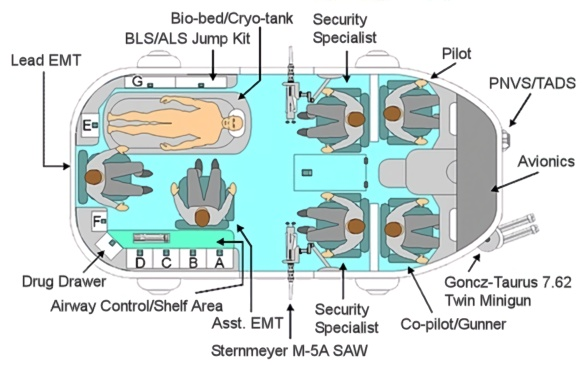

When a TTI Card is activated, this is the standard Trauma Team International unit that responds.
The aerodyne is a McDonnell Douglas AV-4A Tactical Urban Assault Vehicle with a customized body. Powered by a single Rolls-Royce Pegasus II Vectored Thrust Turbofan, with 9628 kgs. of thrust, it is capable of speeds up to 565 km/h and has a maximum operational radius of 645 km.
Fully loaded, the AV-4A weighs 4773 kg. This light weight is the result of extensive use of composite materials in both the chassis and the body. Also, thanks to the use of aramid/epoxy laminate in the outer body, the AV is extremely resistant to small arms fire and light anti-vehicle weapons (body has an SP of 25 and an SDP of 60). The interior of the AV-4 is divided into two sections : the cockpit (forward compartment) and the "med-bay" (aft compartment).
The cockpit is separated from the aft compartment by a reinforced bulkhead (SP 15, SDP 10) and has an isolated air filtration system. An intercom system keeps the pilot and co-pilot/gunner in contact with the rest of the crew at all times. The cockpit is accessed via a hatch into the aft compartment, or directly to the exterior via lockable doors to the port and starboard.
The aft compartment, or "med-bay" can also be sealed if necessary and is accessed via large sliding doors, port and starboard, in the sides of the fuselage. Both doors are equipped with explosive bolts that can be activated either from the cockpit or from the med-bay.
The TTI AV-4A is also very capable of fighting back, albeit in a limited fashion. In addition to the small arms carried by all of the crew members, the ship itself is armed with twin Goncz-Taurus 7.62 mm minigun (in an underslung nosepod, controlled by the co-pilot / gunner) and one Sternmeyer M-5A SAW (7.62C) on a retractable pintle mount for each door gunner.
The TTI AV-4A is manned by a crew of six specialists, as follows :

The Trauma Team AV-4A packs a tremendous amount of life-saving equipment into an amazingly small volume. Each crew-member has an assigned position and, during transport, is seated in a McDonnell Douglas ACES III (Advanced Concept Ejection Seat) rocket-powered, acceleration-damped, ejection seat equipped with a vectored-thrust pitch control system and a 5-point harness. It is capable of zero-zero performance, and is cleared for use up to a height of 15000 meters and a speed of 1100 km/h, which far exceeds the operational envelope of the AV-4A.
The pilot and co-pilot/gunner (CPG) operate in a "glass cockpit", which boasts 5 LCD MFDs (Multi-Functional Displays) and an independent HUD (Heads-Up Display) for each crew-member. Flight controls are very similar to that of a conventional helicopter, and consist of a cyclic joystick and a collective lever (to the left). Additionally, the Litton NR760 TADS/PNVS (Target Acquisition Designation System / Pilots Night Vision System) is coupled to the helmets of both the pilot and CPG, with output visible via either neural jack or flip-down visual reticle. Additionally, the CPG's helmet is equipped with "look down, shoot down" IR position indicators, such that the weapons turret points where the CPG looks. A cross-hair image is provided for the CPG either via smartgun link (+2 to hit) or via helmet reticle (+1 to hit). The system provides both cockpit crew-members with the equivalent of Low Light, Thermograph and TeleOptic vision, for all views external to the AV.
The AV-4A cockpit is equipped with 3 independent 2-way radio systems : 2 Sabre 1200 FM commo suites (one for city frequencies, the other for county frequencies) and 1 Sabre 2100 FADES (Frequency-Agile, Dual Encryption Security) Tactical Communication System. The latter system is used exclusively for communicating either with the local TTI base, or with other TTI vehicles. The "med-bay" (aft compartment) is equipped with a Body Weight Med-Line 2000 voice/vision/fax/data Transceiver set. This unit is connected directly to the cryo-tank (below), which allows direct transmission of patient vitals to TTI Medical Control. It can also accept a wide variety of data disks and chips to facilitate diagnosis.
The AV is equipped with an APG-85 multi-mode, all-weather, Pulse-Doppler "smart" radar. It has an operational range of 50 km against targets with an RCS (Radar Cross-Section) similar to the AV-4. It includes TWS (Track-While-Scan), NCTR (Non-Cooperative Target Recognition) and a "look down" SAR (Synthetic Aperture Radar) mode which can produce an almost photographic-quality monochrome image. This is an invaluable feature when approaching a potentially hot LZ. Further, the AV is equipped with flare and millimeter chaff dispensers, mounted to the ventral aft fuselage.
Of course, all of the other features of the TTI AV-4A exist solely to support it's primary function : the transport of sick and/or injured clients. To this end, the AV is packed with state-of-the-art emergency medical equipment and supplies.
The heart of the AV is the BodyWeight CR-2000 "Last Chance" Life Pod (combination bio-bed / cryo-tank). This marvel of medical technology serves two major funtions. The "bio-bed" function provides the EMTs with a "Super Gurney" which warms, cushions, restrains and generally protects the patient. It also has built-in bio-monitor and "smart" IV controller, as well as a Portable Intern Unit (ChromeBook 3, pg. 7 : +2 to the Diagnose skill and +1 to stabilization attempts).
When damage is too severe, the "cryo-tank" comes into play. Once the patient is placed in the tank, a BodyWeight VC-100 Vascular Shunt (AKA "Vampire Cuff") is placed around the patients neck. The shunt automatically locates the external carotid arteries and the external jugular veins, and inserts bypass cannulas which immediately begin circulating oxygenated heme substitute to the brain. Once the shunt is activated, multiple doses of RBA (Radicals Binding Agent or "Rhythym & Blues" as it is frequently called) are injected throughout the body to prevent free radicals from accelerating cellular breakdown. An ET tube is inserted to flush the lungs with moist, oxygenated air and sealing tape is used on the nose and mouth. The cryo-tank is then closed and flooded with aerated, electrolytically balanced suspension gel, cooled to a temperature of -4° C. The patient is thus stabilized for delivery to the nearest critical care facility.
Additional standard equipment consists of :
| Interior Compartments (from illustration above) | ||||
| Compartment A | Compartment B | Compartment C | Compartment D | Compartment E |
| Airway Control/Shelf Area | Compartment F | Compartment G | Drug Drawer | BLS/ALS Jump Kit |
| Front cab | ||||
| Exterior Compartments | ||
| Driver's side #1 | Driver's side #2 | Driver's side #3 |
| Officer's side #1 | Officer's side #2 | Officer's side #3 |
Top
|
Middle
|
Bottom
|
Top
|
Bottom
|
Top
|
Bottom
|
Left
|
Right
|
Left
|
Right
|
|
|
|
|
ALS : Advanced Life Support.
BP cuff : Blood Pressure cuff.
BLS : Basic Life Support.
Bulb Aspirator : A round rubber vacuum bulb with a tapered tip, used to suction fluid from body orifaces..
Cadaver Pouch : Commonly known as "body bags", these large zippered vinyl bags are used to contain and transport a corpse, usually from the scene of an accident or crime to the morgue.
Chux Pad : A large disposable pad consisting of a thick layer of highly absorbant batting with a waterproof synthetic backing. These are frequently used in childbirth, and any other medical situation where a large amount of blood or other body fluid may be discharged.
Emesis Basin : Small, shallow kidney-shaped pans, usually made of aluminum or stainless steel. Used to collect any oral discharge from the patient.
IO Kit : IntraOsseous kit. Used to provide an intravenous feed into the marrow region of a major bone when venous puncture sites are not available. Frequently used on pediatric patients due to the difficulty of starting successful IVs on such small veins.
Jamshidi Needle : A long, tapered combination needle/drill, used for bone core and marrow biopsies, and for intraosseous introduction of fluids and medication in pediatric patients.
KED : Kendrick Extraction Device. A versatile, improved means of immobilizing and extricating patients from auto accidents or confined spaces. The color-coded straps make application simple even in the dark or in extremely cramped areas. Straps are held in place, out of the way, until needed. The wraparound design provides horizontal flexibility for easy application and vertical rigidity for maximum support during extrication. Immobilizes torso, head and neck enabling prompt extrication while minimizing risk of further injury. Adapts for children and pregnant women.
Laryngoscope : An instrument to provide illumination to the glottis so as to facilitate passing an endotracheal tube through the patient's vocal cords. Laryngoscopes can also be used to examine for any pathology (edema, bleeding, polyps, fibrosis). The most popular laryngoscope, the Macintosh design, is curved so that the end fits into the vallecula, lifting the epiglottis out of the way to expose the vocal cords. Special laryngoscopes also exist, such as the straight blade (Miller) design (passed posterior to the epiglottis, avoiding the vallecula).
LifePak : Brand name of the Cardio-Vert LifePak 550P Monitor/Defibrillator/Pacer.
Luer Adapter : An adapter that connects a tapered Luer fitting (square nib) of a syringe to a tube or tube fitting.
Luer Syringe : A disposable syringe that uses a luer-type connection between the needle and syringe body.
Oxygen Cylinder : A compressed gas bottle containing 400 liters of oxygen (O2) for model D, 3450 for model M. In the U.S., medical O2 bottles are color-coded green.
MAST / PASG : Military Anti-Shock Trousers. Also know as PASG (Pneumatic Anti-Shock Garment). High-waisted inflatable pants that reach from the base of the ribcage to the ankle. When inflated, they cause lower body vascular compression, which forces blood back into the upper body and thus helps to prevent shock. Care should be taken in using these on patients with severe lower body trauma, as the constant absence of blood to the wound areas can accelerate the onset of tissue necrosis (gangrene).
NP Airway : Nasopharyngeal airway. Airway tubing designed to ventilate the patient through a nostril and down into the trachea.
Nasal Cannula : Tubing (typically plastic) for providing oxygen to the patient. The tube ends under the patients nose with twin outlets (one for each nostril).
Nebulizer : A device for introducing atomized fluid into a patients airway. Frequently used as a humidifier or to administer liquid medication orally.
Stretcher, Reeves : A semi-flexible stretcher (removeable stiffening ribs run lengthwise inside the stetcher) used to facilitate moving patients through tight openings or down steep stairs.
Stretcher, Scoop : Used to minimize lifting or "logrolling" the patient when loading. Scoop stretchers separate (down the long axis) into two halve which each slide under the patient on either side and then reconnect.
Tegaderm : A sterile film dressing with excellent oxygen and moisture permeability. Commonly used to secure IV catheters.
Vacutainer : A sealed, evacuated glass sample tube with a needle penetrable rubber top. Typically used to collect blood samples. Available in varying sizes (w/ color-coded tops).
Yankauer Tip : A suction tip with a large opening surrounded by a bulbous head. So designed to allow effective suction without aspiration of surrounding tissue.
EMS/ER kit to help provide oral intubation in a patient.
Kit containing equipment to help facilitate childbirth. What ? You think TTI card-holders never have babies ?
Personal Safety/CPR
Minor Cuts and Scrapes
Larger Injuries/Trauma
Other
Wound Cleaning
Miscellaneous
| A | B | C | D | E | F | G | H | I | J | K | L | M | N | O | P | Q | R | S | T | U | V | W | X | Y | Z |
Class : Adsorbent.
Actions : Adsorbs toxins by chemical binding and prevents gastrointestinal adsorption.
Indications : Poisoning following emesis or when emesis is contraindicated.
Contraindications : None in severe poisoning.
Precautions : Should only be administered following emesis, in cases in which it is so indicated. Use with caution in patients with altered mental status. May adsorb Ipecac before emesis; If Ipecac is administered, wait at least 10 minutes to administer activated charcoal.
Side effects : Nausea, vomiting, and constipation.
Dosage : 1 g/kg (typically 50-75 grams) mixed with a glass of water to form a slurry.
Routes : Oral.
Pediatric dosage : 1 g/kg mixed with a glass of water to form a slurry.
Class : Antiarrhythmic.
Actions : Slows AV conduction.
Indications : Symptomatic PSVT.
Contraindications : Second- or third-degree heart block, sick-sinus syndrome, known hypersensitivity to the drug.
Precautions : Arrhythmias, including blocks, are common at the time of cardioversion. Use with caution in patients with asthma.
Side effects : Facial flushing, headache, shortness of breath, dizziness, and nausea.
Dosage : 6 mg given as a rapid IV bolus over a 1-2 second period; if, after 1-2 minutes, cardioversion does not occur, administer a 12-mg dose over 1-2 seconds.
Routes : IV; should be administered directly into a vein or into the medication administration port closest to the patient and followed by flushing of the line with IV fluid.
Pediatric dosage : Safety in children has not been established.
Class : Sympathomimetic (ß2 selective).
Actions : Bronchodilation.
Indications : Asthma reversible bronchospasm associated with COPD.
Contraindications : Known hypersensitivity to the drug, symptomatic tachycardia.
Precautions : Blood pressure, pulse, and EKG should be monitored use caution in patients with known heart disease.
Side effects : Palpitations, anxiety, headache, dizziness and sweating.
Dosage : Metered Dose Inhaler : 1-2 sprays (90 micrograms per spray). Small-Volume Nebulizer : 0.5 ml (2.5 mg) in 2.5 ml normal saline over 5-15 minutes. Rotohaler : one 200-microgram rotocap should be placed in the inhaler and breathed by the patient.
Routes : Inhalation.
Pediatric dosage : 0.15 mg (0.03 ml)/kg in 2.5 ml normal saline by small volume nebulizer.
Class : Solvent, depressant.
Description : A colorless, volatile, flammable liquid of the formula C2H5OH. Acts as a depressant on the CNS when taken in excessive amounts. Used IV to stop premature labor. The other to "common" Alcohols are Isopropyl (C3H7OH, Isopropanol, IPA) and Methyl (CH3OH, Methanol, MeOH).
Class : Xanthine bronchodilator.
Actions : Smooth muscle relaxant, causes bronchodilation, has mild diuretic properties, increases heart rate.
Indications : Bronchial asthma, reversible bronchospasm associated with chronic, bronchitis and emphysema, congestive heart failure, pulmonary edema.
Contraindications : Patients with history of hypersensitivity to the drug, hypotension, patients with peptic ulcer disease.
Precautions : Monitor for arrhythmias. Monitor blood pressure. Do not administer to patients on chronic theophylline. Preparations until the theophylline blood level has been determined.
Side effects : Convulsions, tremor, anxiety, and dizziness vomiting palpitations, PVCs, and tachycardia.
Dosage : Method 1 : 250 - 500 mg in 90 or 80 ml of d5w, respectively, infused over 20-30 minutes (approximately 5-10 mg/kg/hr). Method 2 : 250 - 500 mg (5-7 mg/kg) in 20 ml of D5W infused over 20-30 minutes.
Routes : Slow IV infusion.
Pediatric dosage : 6 mg/kg loading dose to be infused over 20-30 minutes; maximum dose not to exceed 12 mg/kg per 24 hours.
Class : Cardiac inotrope.
Actions : Increases cardiac contractility, vasodilator.
Indications : Short-term management of severe CHF.
Contraindications : Patients with history of hypersensitivity to the drug.
Precautions : May increase myocardial ischemia. Blood pressure, pulse, and EKG should be constantly monitored. Amrinone should only be diluted with normal saline or 1/2 normal saline; no dextrose solutions should be used. Furosemide (Lasix) should not be administered into an IV line delivering Amrinone.
Side effects : Reduction in platelets, nausea and vomiting cardiac arrhythmias.
Dosage : 0.75 mg/kg bolus given slowly over 2-3 minute interval followed by maintenance infusion of 2-15 µg/kg/minute.
Routes : IV bolus and infusion as described earlier.
Pediatric dosage : Safety in children has not been established.
Class : Platelet inhibitor/anti-inflammatory.
Actions : Blocks platelet aggregation.
Indications : New-onset chest pain suggestive of MI signs and symptoms suggestive or recent CVA.
Contraindications : Patients with history of hypersensitivity to the drug.
Precautions : GI bleeding and upset.
Side effects : Heartburn, nausea and vomiting, wheezing.
Dosage : 150-325 mg PO or chewed.
Routes : PO.
Pediatric dosage : Not recommended.
Class : Parasympatholytic (anticholinergic).
Actions : Blocks acetylcholine receptors, increases heart rate, decreases gastrointestinal secretions.
Indications : Hemodynamically-significant bradycardia, hypotension secondary to bradycardia, asystole, organophosphate poisoning.
Contraindications : None when used in emergency situations.
Precautions : Dose of 0.04 mg/kg should not be exceeded except in cases of organophosphate poisonings, tachycardia, hypertension.
Side effects : Palpitations and tachycardia, headache, dizziness and anxiety, dry mouth, pupillary dilation and blurred vision, urinary retention (especially older males).
Dosage : Bradycardia : 0.5 mg every 5 minutes to maximum of 0.04 mg/kg. Asystole : 1 mg. Organophosphate poisoning : 2-5 mg.
Routes : IV, ET (ET dose is 2 - 2.5 times IV dose).
Pediatric dosage : Bradycardia : 0.02 mg/kg. Maximum single dose (child 0.5 mg) (adolescent 1.0 mg). Maximum total dose (child 1.0 mg) (adolescent 2.0 mg).
Class : Antiarrhythmic.
Actions : Increases ventricular fibrillation threshold, blocks the release of Norepinephrine from peripheral, sympathetic nerves.
Indications : Ventricular fibrillation refractory to Lidocaine, ventricular tachycardia refractory to Lidocaine, PCVs refractory to first-line medications.
Contraindications : None when used in the management of life-threatening arrhythmias.
Precautions : Postural hypotension occurs in almost 50% of patients receiving Bretylium. Patient must be kept supine decrease dosage in patients being treated with catecholamine sympathomimetics.
Side effects : Hypotension, syncope and bradycardia, increased frequency of arrhythmias, dizziness and vertigo.
Dosage : 5 mg/kg. may be repeated at dose of 10 mg/kg up to a total dose of 30 mg/kg.
Routes : Rapid IV bolus.
Pediatric dosage : 5 mg/kg.
Class : Electrolyte.
Actions : Increases cardiac contractility.
Indications : Acute hyperkalemia (elevated potassium), acute hypocalcemia (decreased calcium), calcium channel blocker (Nifedipine, Verapamil, etc.), overdose, abdominal muscle spasm associated with spider bite and portuguese man-o-war stings, antidote for magnesium sulfate.
Contraindications : Patients receiving digitalis.
Precautions : IV line should be flushed between calcium chloride and sodium bicarbonate administration. Extravasation may cause tissue necrosis.
Side effects : Arrhythmias (bradycardia and asystole), hypotension.
Dosage : 2-4 mg/kg of a 10% solution; may be repeated at 10-minute intervals.
Routes : IV.
Pediatric dosage : 5-7 mg/kg of a 10% solution.
Class : Steroid.
Actions : Possibly decreases cerebral edema, anti-inflammatory, suppresses immune response (especially in allergic reactions).
Indications : Cerebral edema, anaphylaxis (after Epinephrine and diphenhydramine), asthma, COPD.
Contraindications : None in the emergency setting.
Precautions : Should be protected from heat, onset of action may be 2-6 hours and thus should not be considered to be of use in the critical first hour following an anaphylactic reaction.
Side effects : Gastrointestinal bleeding, prolonged wound healing.
Dosage : 4-24 mg.
Routes : IV.
Pediatric dosage : 0.2-0.5 mg/kg.
Class : Carbohydrate.
Actions : Elevates blood glucose level rapidly.
Indications : Hypoglycemia.
Contraindications : None in the emergency setting.
Precautions : A blood sample should be drawn before administering 50% dextrose.
Side effects : Local venous irritation.
Dosage : 25 grams (50 ml).
Routes : IV.
Pediatric dosage : 0.5 g/kg slow IV; should be diluted 1:1 with sterile water to form a 25% solution.
Class : Tranquilizer (Benzodiazepine).
Actions : Anticonvulsant, skeletal muscle relaxant, sedative.
Indications : Generalized seizures, status epilepticus, premedication before cardioversion, skeletal muscle relaxant, acute anxiety states.
Contraindications : Patients with a history of hypersensitivity to the drug.
Precautions : Can cause local venous irritation. Has short duration of effect. Do not mix with other drugs because of possible precipitation problems.
Side effects : Drowsiness, hypotension, respiratory depression, apnea.
Dosage : Status epilepticus : 5-10 mg IV. Acute anxiety : 2-5 mg IM or IV. Premedication before cardioversion : 5-15 mg IV.
Routes : IV (care must be taken not to administer faster than 1 ml/min). IM rectal.
Pediatric dosage : Status epilepticus : 0.1 - 0.2 mg/kg.
Class : Cardiac glycoside.
Actions : Increases cardiac contractile force, increases cardiac output, reduces edema associated with congestive heart failure, slows AV conduction.
Indications : Congestive heart failure, rapid atrial arrhythmias, especially atrial flutter and atrial fibrillation.
Contraindications : Any patient with signs or symptoms of digitalis, toxicity, ventricular fibrillation.
Precautions : Monitor for signs of digitalis toxicity. Patients who have recently suffered a myocardial infarction have greater sensitivity to the effects of digitalis. Calcium should not be administered to patients receiving digitalis.
Side effects : Nausea, vomiting, arrhythmias, yellow vision.
Dosage : 0.25-0.50 mg.
Routes : IV.
Pediatric dosage : 25-40 µg/kg.
Class : Calcium channel blocker.
Actions : Slows conduction through the AV node, causes vasodilation, decreases rate of ventricular response, decreases myocardial oxygen demand.
Indications : To control rapid ventricular response associated with atrial fibrillation and flutter.
Contraindications : Hypotension, wide complex tachycardia, conduction system disturbances.
Precautions : Should not be used in patients receiving intravenous ß blockers. Hypotension. Must be kept refrigerated or discarded one month after removal from refrigeration.
Side effects : Nausea, vomiting, hypotension, and dizziness.
Dosage : 0.25 mg/kg bolus (typically 20 mg) IV over 2 minutes. This should be followed by a maintenance infusion of 5-15 mg/hour.
Routes : IV, IV drip.
Pediatric dosage : Rarely used.
Class : Antihistamine.
Actions : Blocks histamine receptors, antiemetic.
Indications : Nausea and vomiting, motion sickness, to potentiate the effects of analgesics.
Contraindications : Comatose states, patients who have received large amounts of depressants (including alcohol).
Precautions : Use with caution in patients with seizure disorders, asthma.
Side effects : May impair mental and physical ability, drowsiness, bronchial secretions.
Dosage : 25-50 mg slow IVP (over 2 minutes) 50 - 100 mg IM.
Routes : IV, IM.
Pediatric dosage : Not recommended.
Class : Antihistamine.
Actions : Blocks histamine receptors, has some sedative effects.
Indications : Anaphylaxis, allergic reactions, dystonic reactions due to phenothiazines.
Contraindications : Asthma, nursing mothers.
Precautions : Hypotension.
Side effects : Sedation, dries bronchial secretions, blurred vision, headache, palpitations.
Dosage : 25-50 mg.
Routes : Slow IV push deep IM.
Pediatric dosage : 2-5 mg/kg.
Class : Sympathomimetic.
Actions : Increases cardiac contractility, little chronotropic activity.
Indications : Short-term management of congestive heart failure.
Contraindications : Should only be used in patients with an adequate heart rate.
Precautions : Ventricular irritability. Use with caution following myocardial infarction. Can be deactivated by alkaline solutions.
Side effects : Increased heart rate, palpitations.
Dosage : 2.5-20 µg/kg/minute. Method : 250 mg should be placed in 500 ml of d5w, which gives a concentration of 0.5 mg/ml.
Routes : IV drip.
Pediatric dosage : 2 - 20 µg/kg/min.
Class : Sympathomimetic.
Actions : Increases cardiac contractility, causes peripheral vasoconstriction.
Indications : Hemodynamically significant hypotension (systolic BP of 70-100 mmhg) not resulting from hypovolemia, cardiogenic shock.
Contraindications : Hypovolemic shock where complete fluid resuscitation has not occurred.
Precautions : Should not be administered in the presence of severe tachyarrhythmias. Should not be administered in the presence of ventricular fibrillation, ventricular irritability. Beneficial effects lost when dose exceeds 20 µg/kg/min.
Side effects : Ventricular tachyarrhythmias, hypertension, palpitations.
Dosage : 2-20 µg/kg/minute. Start low and increase as needed. Method : 800 mg should be placed in 500 ml of D5W giving a concentration of 1600 µg/ml.
Routes : IV drip only.
Pediatric dosage : 2-20 µg/kg/minute.
Description : A hormone produced by the adrenal gland (attached to the kidneys) and synthesized commercially. It is employed therapeutically as a vassoconstrictor, as a cardiac stimulant, and to relax bronchioles. It is also used to treat asthmatic attacks and treat anaphylactic shock.
Class : Sympathomimetic.
Actions : Bronchodilation.
Indications : Bronchial asthma, exacerbation of COPD, allergic reactions.
Contraindications : Patients with underlying cardiovascular disease, hypertension, pregnancy, patients with tachyarrhythmias.
Precautions : Should be protected from light. Blood pressure, pulse and EKG must be constantly monitored.
Side effects : Palpitations and tachycardia, anxiousness, headache, tremor.
Dosage : 0.3-0.5 mg.
Routes : Subcutaneous (IV and ET for pediatric cardiac arrest).
Pediatric dosage : 0.01 mg/kg up to 0.3 mg.
Class : Sympathomimetic.
Actions : Increases heart rate and automaticity. Increases cardiac contractile force. Increases myocardial electrical activity. Increases systemic vascular resistance. Increases blood pressure. Causes bronchodilation.
Indications : Cardiac arrest, anaphylactic shock severe reactive airway disease.
Contraindications : Epinephrine 1:10000 is for intravenous or endotracheal use; it should not be used in patients who do not require extensive resuscitative efforts.
Precautions : Should be protected from light. Can be deactivated by alkaline solutions.
Side effects : Palpitations, anxiety, tremulousness, nausea and vomiting.
Dosage : Cardiac arrest : 0.5-1.0 mg repeated every 3-5 minutes. Severe anaphylaxis : 0.3-0.5 mg (3-5 ml); occasionally and Epinephrine drip is required.
Routes : IV, IV drip, ET.
Pediatric dosage : 0.01 mg/kg initially. with subsequent doses, Epinephrine 1:1000 should be used at a dose of 0.1 mg/kg.
Class : Benzodiazepine antagonist.
Actions : Reverses effects of benzodiazepines.
Indications : To reverse CNS, respiratory depression associated with Benzodiazepines.
Contraindications : Flumazenil should not be used as a diagnostic agent for Benzodiazepine overdose in the same manner Naloxone is used for narcotic overdose. Known hypersensitivity to the drug.
Precautions : Administer with caution to patients dependent upon Benzodiazepines as it may induce life-threatening Benzodiazepine withdrawal.
Side effects : Fatigue, headache, nervousness, dizziness.
Dosage : 0.2-0.3 mg IV over 30 seconds; repeated as needed to a maximum dose of 1.0 mg.
Routes : IV.
Pediatric dosage : Pediatric data unavailable.
Class : Potent diuretic.
Actions : Inhibits reabsorption of sodium chloride, promotes prompt diuresis, vasodilation.
Indications : Congestive heart failure, pulmonary edema.
Contraindications : Pregnancy, dehydration.
Precautions : Should be protected from light, dehydration.
Side effects : Few in emergency usage.
Dosage : 40-80 mg.
Routes : IV.
Pediatric dosage : 1 mg/kg.
Class : Hormone (antihypoglycemic agent).
Actions : Causes breakdown of glycogen to glucose. Inhibits glycogen synthesis. Elevates blood glucose level. Increases cardiac contractile force. Increases heart rate.
Indications : Hypoglycemia.
Contraindications : Hypersensitivity to the drug.
Precautions : Only effective if there are sufficient stores of Glycogen within the liver. Use with caution in patients with cardiovascular or renal disease. Draw blood glucose before administration.
Side effects : Few in emergency situations.
Dosage : 0.25-0,50 mg (unit) IV 1.0 mg, IM.
Routes : IV, IM.
Pediatric dosage : 0.03 mg/kg.
Class : Major tranquilizer.
Actions : Blocks dopamine receptors in brain responsible for mood and behavior has antiemetic properties.
Indications : Acute psychotic episodes.
Contraindications : Should not be administered in the presence of other sedatives. Should not be used in the management of dysphoria caused by Talwin.
Precautions : Orthostatic hypotension.
Side effects : Physical and mental impairment, Parkinson-like reactions have been known to occur, especially in children.
Dosage : 2-5 mg.
Routes : IM.
Pediatric dosage : Rarely used.
Class : Anticoagulant.
Actions : Functions as an anticoagulant by accelerating neutralization of activated clotting factors.
Indications : Situations where a hypocoaguable state is required (i.e. post MI, post-CVA, pulmonary embolism).
Contraindications : Should not be used unless there is a medical reason to anticoagulate the patient.
Precautions : Sever, urticaria, and anaphylaxis have been reported following heparin administration skin necrosis can develop at site of subQ injections.
Side effects : Fever, bruising, oozing of blood.
Dosage : Loading dose : 5,000 iu IV is a typical loading dose although large patients and patients with heparin resistance may receive larger doses. Maintenance dose : Infusion therapy is typically started at 800 - 1000 iu/hour. the dosage is modified based upon the patient's prothrombin (pt) time.
Routes : IV subQ (for prophylaxis).
Pediatric dosage : Rarely used.
Class : Narcotic analgesic.
Actions : CNS depressant, decreases sensitivity to pain.
Indications : Relief of cough and moderate to severe pain.
Contraindications : Patients with a history of hypersensitivity to the drug or acetaminophen (Tylenol).
Precautions : May exaggerate the effects of other CNS depressants. May cause repiratory depression at high dosages. May elevate intracranial and cerebrospinal fluid pressure in the presence of a head injury or a pre-existing increase in intracranial pressure.
Side effects : Lightheadedness, dizziness, drowsiness, nausea, and vomiting.
Dosage : 2.5/5.0/7.5 mg tablets; 1-2 every 4-6 hours.
Routes : Oral.
Pediatric dosage : Not recommended.
Class : Antihistamine.
Actions : Antiemetic, antihistamine, antianxiety, potentiates analgesic effects of narcotics and related agents.
Indications : To potentiate the effects of narcotics and synthetic narcotics, nausea and vomiting, anxiety reactions.
Contraindications : Patients with a history of hypersensitivity to the drug.
Precautions : Orthostatic hypotension, analgesic dosages should be reduced when used with Hydroxyzine, urinary retention.
Side effects : Drowsiness.
Dosage : 50-100 mg.
Routes : Deep IM.
Pediatric dosage : 1 mg/kg.
Class : Hormone (hypoglycemic agent).
Actions : Causes uptake of glucose by the cells, decreases blood glucose level, promotes glucose storage.
Indications : Elevated blood glucose, diabetic ketoacidosis.
Contraindications : Avoid overcompensation of blood glucose level; if possible, administration should wait until the patient is in the emergency department.
Precautions : Administration of excessive dose may induce hypoglycemia. Glucose should be available.
Side effects : Few in emergency situations.
Dosage : 10-25 units regular insulin IV followed by an infusion at 0.1 units/kg/hr.
Routes : IV subQ.
Pediatric dosage : Dosage is based on blood glucose level.
Class : Anticholinergic.
Actions : Causes bronchodilation, dries respiratory tract secretions.
Indications : Bronchial asthma, reversible bronchospasm associated with chronic bronchitis and emphysema.
Contraindications : Patients with history of hypersensitivity to the drug, should not be used as primary agent in acute treatment of bronchospasm.
Precautions : Blood pressure, pulse, and EKG must be constantly monitored.
Side effects : Palpitations, dizziness, anxiety, tremors, headache, nervousness, dry mouth.
Dosage : Small-volume nebulizer : 500 µg should be placed in small volume nebulizer (typically administered with a ß agonist).
Routes : Inhalation only.
Pediatric dosage : Safety in children has not been established.
Class : Sympathomimetic (ß2 selective).
Actions : Bronchodilation, increases heart rate.
Indications : Asthma, reversible bronchospasm associated with chronic bronchitis and emphysema.
Contraindications : Patients with history of hypersensitivity to the drug.
Precautions : Blood pressure, pulse, and EKG must be constantly monitored.
Side effects : Palpitations, tachycardia, anxiety and tremors, headache.
Dosage : Hand nebulizer : four inhalations. Small-volume nebulizer : 0.5 ml (1 :3 with saline).
Routes : Inhalation only.
Pediatric dosage : 0.25-0.5 ml diluted with 4 ml normal saline.
Class : Non-steroidal anti-inflammatory agent.
Actions : Anti-inflammatory, analgesic (peripherally-acting).
Indications : Mild to moderate pain.
Contraindications : Patients with a history of hypersensitivity to the drug, patients allergic to Aspirin.
Precautions : GI irritation or hemorrhage can occur.
Side effects : Edema, rash, heartburn.
Dosage : IV 15-30 mg, IM 30-60 mg.
Routes : IV, IM.
Pediatric dosage : Safety in children has not been established.
Class : Sympathetic blocker.
Actions : Selectively blocks α1 receptors and nonselectively blocks ß receptors.
Indications : Sypertensive crisis.
Contraindications : Sronchial asthma, congestive heart failure, heart block, bradycardia, cardiogenic shock.
Precautions : Blood pressure, pulse, and EKG must be constantly monitored. Atropine and transcutaneous pacing should be available.
Side effects : Bradycardia, heart block, congestive heart failure, bronchospasm, postural hypotension.
Dosage : Method 1 : 20 mg by slow IV infusion over 2 minutes; doses of 40 mg can be repeated in 10 minutes until desired supine blood pressure is obtained or until 300 mg of the drug has been given. Method 2 : 200 mg placed in 500 ml d5w to deliver 2 mg/minute.
Routes : IV infusion or slow IV bolus as described earlier.
Pediatric dosage : Safety in children has not been established.
Class : Antiarrhythmic.
Actions : Suppresses ventricular ectopic activity, increases ventricular fibrillation threshold, reduces velocity of electrical impulse through conductive system.
Indications : Malignant PVCs, ventricular tachycardia, ventricular fibrillation, prophylaxis of arrhythmias associated with acute myocardial infarction and thrombolytic therapy, premedication prior to rapid sequence induction.
Contraindications : High-degree heart blocks, PVCs in conjunction with bradycardia.
Precautions : Dosage should not exceed 300 mg/hr. Monitor for CNS toxicity. Dosage should be reduced by 50% in patients older than 70 years of age or who have liver disease in cardiac arrest, use only bolus therapy.
Side effects : Anxiety, drowsiness, dizziness, and confusion, nausea and vomiting, convulsions, widening of QRS.
Dosage : Bolus : Initial bolus of 1.5 mg/kg; additional boluses of 0.5 - 0.75 mg/kg can be repeated at 8-10-minute intervals until the arrhythmia has been suppressed or until 3 mg/kg of the drug has been administered; reduce dosage by 50% in patients older than 70 years of age. Drip : after the arrhythmia has been suppressed a 2-4 mg/minute infusion may be started to maintain adequate blood levels.
Routes : IV bolus, IV infusion.
Pediatric dosage : 1 mg/kg.
Class : Anticonvulsant/Antiarrhythmic.
Actions : CNS depressant, anticonvulsant, antiarrhyhmic.
Indications : Obstetrical eclampsia (toxemia of pregnancy), pre-eclampsia/PIH, cardiovascular severe refractory ventricular fibrillation, pulseless ventricular tachycardia, post-MI as prophylaxis for arrhythmias, torsades de pointes (multi-axial ventricular tachycardia).
Contraindications : Shock, heart block.
Precautions : Caution should be used in patients receiving digitalis. Hypotension. Calcium Chloride should be readily available as an antidote if respiratory depression ensues. Use with caution in patients in renal failure.
Side effects : Respiratory depression, drowsiness.
Dosage : 1-4 g.
Routes : IV, IM.
Pediatric dosage : Not indicated.
Class : Osmotic diuretic.
Actions : Decreases cellular edema, increases urinary output.
Indications : Acute cerebral edema, blood transfusion reactions.
Contraindications : Pulmonary edema, patients who are dehydrated, hypersensitivity to the drug.
Precautions : Rapid administration can cause circulatory overload crystallization of the drug can occur at lower temperatures. An in-line filter should be used.
Side effects : Pulmonary congestion, sodium depletion, transient volume overload.
Dosage : 1.5-2.0 g/kg.
Routes : IV.
Pediatric dosage : 0.25-0.5 g/kg IV over 60 minutes.
Class : Steroid.
Actions : Anti-inflammatory, suppresses immune response (especially in allergic reactions).
Indications : Severe anaphylaxis, asthma/COPD, possibly effective as an adjunctive agent in the management of spinal cord injury.
Contraindications : None in the emergency setting.
Precautions : Must be reconstituted and used promptly. Onset of action may be 2-6 hours and thus should not be expected to be of use in the critical first hour following an anaphylactic reaction.
Side effects : GI bleeding, prolonged wound healing, suppression of natural steroids.
Dosage : General usage : 125-250 mg. Spinal cord injury : Initial bolus of 30 mg/kg administered over 15 minutes, followed by a maintenance infusion of 5.4 mg/kg/hr.
Routes : IV, IM.
Pediatric dosage : 30 µg/kg.
Class : Benzodiazepine tranquilizer.
Actions : Hypnotic, sedative.
Indications : Premedication prior to cardioversion/RSI, acute anxiety states.
Contraindications : Patients with known hypersensitivity to the drug, narrow-angle glaucoma, shock.
Precautions : Emergency resuscitation equipment should be available. Flumazenil (Romazicon) should be available. Dilute with normal saline or D5W prior to intravenous administration. Respiratory depression more common with Midazolam than with other Benzodiazepines.
Side effects : Drowsiness, hypotension, amnesia, respiratory depression, apnea.
Dosage : 1.0- 2.5 mg IV.
Routes : IV, IM, intranasal.
Pediatric dosage : 0.03 mg/kg.
Class : Narcotic.
Actions : CNS depressant, causes peripheral vasodilation, decreases sensitivity to pain.
Indications : Severe pain, pulmonary edema.
Contraindications : Head injury, volume depletion undiagnosed abdominal pain, patients with history of hypersensitivity to the drug.
Precautions : Respiratory depression (narcan should be available), hypotension, nausea.
Side effects : Dizziness, altered level of consciousness.
Dosage : IV : 2-5 mg followed by 2 mg every few minutes until the pain is relieved or until respiratory depression ensues. IM : 5-15 mg based on patient weight.
Routes : IV, IM.
Pediatric dosage : 0.1-0.2 mg/kg IV.
Class : Synthetic analgesic.
Actions : CNS depressant, decreases sensitivity to pain.
Indications : Moderate to severe pain.
Contraindications : Patients with a history of hypersensitivity to the drug.
Precautions : Use with caution in patients with impaired respiratory function, respiratory depression (Naloxone should be available). Patients dependent on narcotics may experience, symptoms of withdrawal, nausea.
Side effects : Dizziness, altered level of consciousness.
Dosage : 5-10 mg.
Routes : IV, IM.
Pediatric dosage : Rarely used.
Class : Narcotic antagonist.
Actions : Reverses effects of narcotics.
Indications : Narcotic overdoses including the following : Codeine, Demerol, Dilaudid, Fentanyl, Heroin, Lortabs, Methadone, Morphine, Paregoric, Percodan, Tylox, Vicodin, synthetic analgesics. Overdoses including the following : Darvon, Nubain, Stadol, Talwin, alcoholic coma. To rule out narcotics in coma of unknown origin.
Contraindications : Patients with a history of hypersensitivity to the drug.
Precautions : Should be administered with caution to patients dependent on narcotics as it may cause withdrawal effects. Short-acting, should be augmented every 5 minutes.
Side effects : None.
Dosage : 1-2 mg.
Routes : IV, IM. ET (ET dose is 2.0-2.5 times IV dose).
Pediatric dosage : < 5 years old > 5 years old 0.1 mg/kg 2.0 mg.
Class : Calcium channel blocker.
Actions : Relaxes smooth muscle causing arteriolar vasodilation decreases peripheral vascular resistance.
Indications : Severe hypertension, angina pectoris.
Contraindications : Known hypersensitivity to the drug, hypotension.
Precautions : Blood pressure should be constantly monitored. May worsen congestive heart failure. Nifedipine should not be administered to patients receiving intravenous beta blockers.
Side effects : Dizziness, flushing, nausea, headache, and weakness.
Dosage : 10 mg sublingually; puncture the capsule several times with a needle and place it under the patient's tongue and have them withdraw the liquid medication.
Routes : Oral, sublingual.
Pediatric dosage : 0.25-0.5 mg/kg.
Class : Antianginal.
Actions : Smooth-muscle relaxant, decreases cardiac work, dilates coronary arteries, dilates systemic arteries.
Indications : Angina pectoris, chest pain associated with myocardial infarction.
Contraindications : Hypotension.
Precautions : Constantly monitor vital signs. Syncope can occur.
Side effects : Dizziness, hypotension, headache.
Dosage : One spray administered under the tongue; may be repeated in 10-15 minutes; no more than three sprays in a 15-minute period; spray should not be inhaled.
Routes : Sprayed under tongue on mucous membrane.
Pediatric dosage : Not indicated.
Class : Antianginal.
Actions : Smooth-muscle relaxant, decreases cardiac work, dilates coronary arteries, dilates systemic arteries.
Indications : Angina pectoris, chest pain associated with myocardial infarction.
Contraindications : Children younger than 12 years of age, hypotension.
Precautions : Constantly monitor blood pressure, syncope, drug must be protected from light, expires quickly once bottle is opened.
Side effects : Dizziness, hypotension.
Dosage : 1/2 to 3/4 inches.
Routes : Topical.
Pediatric dosage : Not indicated.
Class : Sympathomimetic.
Actions : Causes peripheral vasoconstriction.
Indications : Hypotension refractory to other sympathomimetics, neurogenic shock.
Contraindications : Hypotensive states due to hypovolemia.
Precautions : Can be deactivated by alkaline solutions. Constant monitoring of blood pressure is essential. Extravasation can cause tissue necrosis.
Side effects : Anxiety, palpitations, hypertension.
Dosage : 0.5-30 µg/minute. Method : 8 mg should be placed in 500 ml of D5W, giving a concentration of 16 µg/ml.
Routes : IV drip only.
Pediatric dosage : 0.01-0.5 µg/kg/minute (rarely used).
Class : Gas.
Actions : Necessary for cellular metabolism.
Indications : Hypoxia.
Contraindications : None.
Precautions : Use cautiously in patients with COPD, humidify when providing high-flow rates.
Side effects : Drying of mucous membranes.
Dosage : Cardiac arrest : 100%. Other critical patients : 100%. COPD : 35%.
Routes : Inhalation.
Pediatric dosage : 24-100% as required.
Class : Anticonvulsant/antiarrhythmic.
Actions : Inhibits spread of seizure activity through motor cortex, antiarrhythmic.
Indications : Status epilepticus, arrhythmias due to digitalis toxicity.
Contraindications : Any arrhythmia except those due to digitalis toxicity, patients with history of hypersensitivity to the drug.
Precautions : Should not be administered with glucose solutions. Hypotension. EKG monitoring during administration is essential.
Side effects : Local venous irritation, central nervous system depression.
Dosage : Status epilepticus : 150-250 mg (10-15 mg/kg) not to exceed 50 mg/minute. Digitalis toxicity : 100 mg over 5 minutes until the arrhythmia is suppressed or until symptoms of central nervous system depression occur.
Routes : IV (dilute with saline).
Pediatric dosage : Status epilepticus : 8-10 mg/kg IV. Digitalis toxicity : 3-5 mg/kg IV over 10 minutes.
Class : Antiarrhythmic.
Actions : Slows conduction through myocardium, elevates ventricular fibrillation threshold, suppresses ventricular ectopic activity.
Indications : Persistent cardiac arrest due to ventricular fibrillation and refractory to Lidocaine, PVCs refractory to Lidocaine, ventricular tachycardia refractory to Lidocaine.
Contraindications : High-degree heart blocks, PVCs in conjunction with bradycardia.
Precautions : Dosage should not exceed 17 mg/kg. Monitor for central nervous system toxicity.
Side effects : Anxiety, nausea, convulsions, widening of QRS.
Dosage : Initial : 20 mg/minute until arrhythmia abolished, hypotension ensues, QRS widened by 50% of original width total of 17 mg/kg has been given. Maintenance : 1-4 mg/minute.
Routes : Slow IV bolus, IV drip.
Pediatric dosage : Rarely used.
Class : Phenothiazine antiemetic.
Actions : Antiemetic.
Indications : Nausea and vomiting, acute psychosis.
Contraindications : Comatose states, patients who have received a large amount of depressants (including alcohol), patients with a history of hypersensitivity to the drug.
Precautions : EPS (extra-pyramidal seizure) (dystonic) reactions have been reported.
Side effects : May impair mental and physical ability, drowsiness.
Dosage : 5-10 mg slow IV or IM.
Routes : IV, IM.
Pediatric dosage : Not recommended.
Class : Antihistamine (h1 antagonist).
Actions : Mild anticholinergic activity, antiemetic, potentiates actions of analgesics.
Indications : Nausea and vomiting, motion sickness, to potentiate the effects of analgesics, sedation.
Contraindications : Comatose states, patients who have received a large amount of depressants (including alcohol).
Precautions : Avoid accidental intra-arterial injection.
Side effects : May impair mental and physical ability, drowsiness.
Dosage : 25 mg.
Routes : IV.
Pediatric dosage : 0.5 mg/kg.
Class : Sympathomimetic.
Actions : Bronchodilation, increases heart rate, increases cardiac contractile force.
Indications : Croup (laryngotracheobronchitis).
Contraindications : Epiglottitis, hypersensitivity to the drug.
Precautions : Vital signs should be constantly monitored. Should be used only once in the prehospital setting.
Side effects : Palpitations, anxiety, headache.
Dosage : 0.5-0.75 ml of a 2.25% solution in 2.0 ml normal saline.
Routes : Inhalation only (small-volume nebulizer).
Pediatric dosage : 0.25-0.75 ml of a 2.25% solution in 2.0 ml normal saline.
Description : A drug used to help prevent mycobacterium avium complex disease in patients with HIV infections.
Description : A sterile solution of specified amounts of calcium, potassium chloride, sodium chloride, and sodium lactate in water for injection. It is used intravenously to treat dehydration and replace electrolytes.
Class : Alkalinizing agent.
Actions : Combines with excessive acids to form a weak volatile acid, increases ph.
Indications : Late in the management of cardiac arrest, if at all, tricyclic antidepressant overdose, severe acidosis refractory to hyperventilation.
Contraindications : Alkalotic states.
Precautions : Correct dosage is essential to avoid overcompensation of ph. Can deactivate catecholamines. Can precipitate with calcium preparations. Delivers large sodium load.
Side effects : Alkalosis.
Dosage : 1 mEq/kg initially followed by 0.5 mEq/kg every 10 minutes as indicated by blood gas studies.
Routes : IV.
Pediatric dosage : 1 mEq/kg initially followed by 0.5 mEq/kg every 10 minutes.
Class : Neuromuscular blocking agent (depolarizing).
Actions : Skeletal muscle relaxant, paralyzes skeletal muscles including respiratory muscles.
Indications : To achieve paralysis to facilitate endotracheal intubation.
Contraindications : Patients with known hypersensitivity to the drug.
Precautions : Should not be administered unless persons skilled in endotracheal intubation are present. Endotracheal intubation equipment must be available. Oxygen equipment and emergency resuscitative drugs must be available. Paralysis occurs within 1 minute and lasts for approximately 8 minutes.
Side effects : Prolonged paralysis, hypotension, bradycardia.
Dosage : 1-1.5 mg/kg (40-100 mg in an adult).
Routes : IV.
Pediatric dosage : 1 mg/kg.
Class : Sympathomimetic.
Actions : Bronchodilator, increases heart rate.
Indications : Bronchial asthma, reversible bronchospasm associated with COPD, preterm labor.
Contraindications : Batients with known hypersensitivity to the drug.
Precautions : Blood pressure, pulse, and EKG must be constantly monitored.
Side effects : Palpitations, tachycardia, and PVCs, anxiety, tremor and headache.
Dosage : Metered-dose inhaler : two inhalations, 1 minute apart. Subcutaneous injection : 0.25 mg; may be repeated in 15-30 minutes. Preterm labor : 0.25 mg IM or IV. may be repeated in 15-30 minutes as needed.
Routes : Inhalation, subcutaneous injection, IV (preterm labor only).
Pediatric dosage : 0.01 mg/kg subcutaneously.
Class : Vitamin.
Actions : Allows normal breakdown of glucose.
Indications : Coma of unknown origin, alcoholism, delirium tremens.
Contraindications : None in the emergency setting.
Precautions : Rare anaphylactic reactions have been reported.
Side effects : Rare, if any.
Dosage : 100 mg.
Routes : IV, IM.
Pediatric dosage : Rarely indicated.
Class : Potent diuretic.
Actions : Inhibits reabsorption of sodium chloride, promotes prompt diuresis.
Indications : Congestive heart failure, pulmonary edema.
Contraindications : Patients with known hypersensitivity to the drug, anuria.
Precautions : Should be used with caution in patients taking NSAIDs, dehydration.
Side effects : Dizziness, headache, nausea.
Dosage : 10-20 mg.
Routes : IV.
Pediatric dosage : Safety not established.
Class : Neuromuscular blocking agent (non-depolarizing).
Actions : Skeletal muscle relaxant, paralyzes skeletal muscles including respiratory muscles.
Indications : To achieve paralysis to facilitate endotracheal intubation.
Contraindications : Patients with known hypersensitivity to the drug.
Precautions : Should not be administered unless persons skilled in endotracheal intubation are present. Endotracheal intubation equipment must be available. Oxygen equipment and emergency resuscitative drugs must be available. Paralysis occurs within 1 minute and lasts for approximately 30 minutes.
Side effects : Prolonged paralysis, hypotension, bradycardia.
Dosage : 0.08-0.10 mg/kg.
Routes : IV.
Pediatric dosage : 0.1 mg/kg.
Class : Calcium channel blocker.
Actions : Slows conduction through the AV node, inhibits reentry during PSVT, decreases rate of ventricular response, decreases myocardial oxygen demand.
Indications : PSVT.
Contraindications : Heart block, conduction system disturbances.
Precautions : Should not be used in patients receiving intravenous ß blockers, hypotension.
Side effects : Nausea, vomiting, hypotension, and dizziness.
Dosage : 2.5 - 5.0 mg. a repeat dose of 5 - 10 mg can be administered after 15-30 minutes if PSVT does not convert. maximum dose is 30 mg in 30 minutes.
Routes : IV.
Pediatric dosage : 0-1 year : 0.1-0.2 mg/kg (maximum of 2.0 mg) administered slowly. 1-15 years : 0.1-0.3 mg/kg (maximum of 5.0 mg) administered slowly.
| A | B | C | D | E | F | G | H | I | J | K | L | M | N | O | P | Q | R | S | T | U | V | W | X | Y | Z |
Activated Charcoal : Adsorbent
Adenosine (Adenocard) : Antiarrhythmic
Albuterol (Proventil) (Ventolin) : Sympathomimetic (ß2 selective)
Alcohol, Ethyl (Ethanol) (EtOH) : Solvent, depressant
Aminophylline : Xanthine bronchodilator
Amrinone (Inocor) : Cardiac inotrope
Aspirin (Bufferin) : Platelet inhibitor/anti-inflammatory
Atropine : Parasympatholytic (anticholinergic)
ABCs : The critical components of the initial evaluation of an accident or trauma victim. They stand for :
Abduction : To move a limb or some other body part away from the midline of the body.
ABG : Arterial blood gas reading.
ACE : Angiotension-converting enzyme.
ACE Bandage : Trade name for an elastic bandage made of woven material.
Acidotic : Abnormally high acidity of body fluids and tissues.
Acute : Sudden, intense flare-up.
Agonal : A word used to describe a major negative change in a patient's condition, usually preceding immediate death, such as a complete cessation of breathing or a dire change in the patient's EEG or EKG.
ALS : Advanced Life Support.
Alzheimer's Disease : A progressive disease with specific brain abnormalities marked by memory loss and progressive inability to function normally at even the simplest tasks.
AMA : Against Medical Advice or American Medical Association.
Ambu-Bag : Proprietary name for a Bag-Valve Mask.
Amp : Abbreviation for ampule, which is a sealed plastic or glass capsule containing a single dose of a drug in a sterile solution for injection.
Anaphylactic Shock : An extreme allergic reaction that usually involves heart failure, circulatory collapse, a severe asthma-like difficulty in breathing and sometimes results in death.
Anemia : Chronically low hematocrit.
Aneurysm : A balloon-like deformity in the wall of a blood vessel. The wall weakens as the balloon grows larger, and may eventually burst, causing a hemorrhage.
Angina Pectoris : A severe acute attack of cardiac pain.
Angioplasty : Plastic surgery of blood vessels during which a balloon is passed into the artery and inflated to enlarge it and increase blood flow.
Anhidrosis : The abnormal absence of sweat.
Anterior : Word used to describe the front surface of an organ, muscle, etc.
Aortic Calcification : Hardening of the aorta, the main artery coming out of the left ventricle of the heart, usually from cholesterol deposits or some other organic substance.
Aortic Coarctation : A dangerous narrowing of the aorta.
Aortic Dissection : A tear in the aorta.
Apgar Score : Test administered to newborn infants to evaluate their physical condition. System of scoring infant's physical condition one minute after birth. The heart rate, respiration, muscle tone, response to stimuli, and color are each rated 0, 1 or 2. The maximum total score is 10. Those with low scores require immediates attention if they are to survive. The test may be repeated at 5 or more minutes after birth in order to judge recovery of infants with low scores.
| Sign | 0 | 1 | 2 |
|---|---|---|---|
| Heart Rate | Absent | Slow (less than 100) | Greater than 100 |
| Respiratory Effort | Absent | Slow, Irregular | Good; crying |
| Muscle Tone | Limp | Some flexion of extremities | Active motion |
| Reflex Irritability | No response | Grimace | Cough or sneeze |
| Color | Blue, pale | Body pink; extremities blue | Completely pink |
Aortic Rupture : When the aorta bursts.
Arterial Stick : Insertion of an IV line into an artery.
Arrhythmia : When the beat of the heart is no longer originating from the sinus node, and the rhythm is abnormal.
ASA : The abbreviation for Acetylsalicylic Acid (aspirin).
Aspirate, Aspiration : To draw in or out using suction. The term can refer to inhaling purposefully (such as breathing in oxygen or inhalants) or inhaling accidentally (such as sucking food into the airway). May also refer to medical interventions to remove harmful substances (such as air, body fluids, or bone fragments) or to remove tissue samples for testing.
Astrocytoma : A slowly growing tumor of the glial tissue of the brain and the spinal cord.
Asystole : A condition in which the heart no longer beats and usually cannot be restarted.
Atypical angina : A form of angina pectoris that does not manifest the typical angina symptoms of chest pain, shortness of breath, etc, but which comes on suddenly and occurs without a predisposing cause.
Awake, Alert and Oriented X3 Nonfocal : Medical shorthand indicating that a patient is in a cogent state and aware of their surroundings. "Oriented x3" means the patient is aware of person, place, and time (who they are, where they are, and what time it is).
Bretylium (bretylol) : Antiarrhythmic
Babinski's Reflex : Also known as the plantar reflex; the movement of the big toe upward instead of downward; used to test injury to, or diseases of, the upper motor neurons.
Bagging (Slang) : Manual respiration for a patient having breathing trouble that uses a handheld squeeze bag attached to a face mask.
Barlow's Syndrome : Infantile scurvy.
Bilateral Hemothorax : Blood in both sides of the pleura, the membrane covering the lung.
Binky test (Slang) : The ability of an infant to evidence basic stability and an interest in "the important things in life" by placidly sucking on a pacifier. From an account by M. Borgeson, MD, of an infant whose over-hasty intubation for mere tachypnea without respiratory distess was averted by a nurse who placed a pacifier in the child's mouth, thus demonstrating the "positive Binky Test", and blocking an unnecessary procedure. The term is a salutary reminder to check the whole patient and not focus too narrowly upon a single finding.
Blood Culture : Incubating a blood sample so that suspected infectious bacteria can multiply and thus be identified.
Blood Gas : A test to determine the gas-phase components of blood, including oxygen, carbon dioxide, pH balance, etc.
Blood Pressure : A measure of how well blood circulates through your arteries, listen in the format of the systolic pressure over the diastolic pressure. Normal blood pressure is about 120/80.
Blood Swab : A blood sample taken with a cotton-tipped stick.
BLS : Basic Life Support.
Body Packer (Slang) : A drug courier who swallows condoms filled with cocaine or heroin in order to smuggle them into a country and then passes them rectally after he's safe.
Bolus : A large dose of a drug that is given (usually intravenously) at the beginning of treatment to raise blood-level concentrations to a therapeutic level.
Bounceback (Slang) : A patient who returns to the ER with the same complaint shortly after being released.
Bowel Disimpaction : Manual removal of impacted fecal matter from a patient's rectum.
BP : Abbreviation for blood pressure.
Bradycardic : A slowing of the heart rate to less than 50 beats per minute.
Breath Sounds : The sounds heard through a stethoscope placed on the chest over the lungs.
Bronchoscopy : The use of an endoscope to examine and take biopsies from the interior of the bronchia.
BSA : Burn Surface Area. The total area (expressed as a percentage) of the burned area on a patient's body.
BUN : Abbreviation for Blood Urea Nitrogen.
BVM : Bag-Valve Mask, a handheld squeeze bag, attached to a face mask, used to assist in providing artificial ventilation of the lungs. See also bagging.
Calcium Chloride (CaCl) : Electrolyte
C-Section : Shorthand for cesarean section, which is surgical delivery of a baby through the abdominal wall.
C-Spine : Shorthand for cervical spine, or the neck.
Calcium Oxalate Stone : A kidney stone.
Calot's Triangle : The cystic duct, the common duct, and the liver.
Calyx : A cup-shaped part of the kidneys.
Capillary Refill : When a fingernail is pressed, the nail bed turns white. Capillary refill refers to the return of the nail bed to pink color. Good cap refill is two seconds or less.
Carboxyhemoglobin : A substance formed when the poisonous gas carbon monoxide combines with hemoglobin in the blood. Carboxyhemoglobin is incapable of transporting oxygen to the body's organs. Large amounts of this compound are found in carbon monoxide poisoning.
Cardiac Effusion : See pericardial effusion.
Cardiac Enzymes : Creatine kinase, lactate dehydrogenase and aspartate transaminase.
Cardiomyopathy : A disorder of the heart muscle that can often be fatal.
Cardiac Tamponade : Compression of the heart from fluid such as an effusion or blood.
CAT scan : Computerized axial tomography.
Catcher's Mask (Slang) : A device used for a patient with bleeding varices in the throat that allows a tube with two balloons attached to be positioned securely in the throat and inflated. The balloons then put pressure on the enlarged veins in order to stop the bleeding.
Catheter : A flexible tube for withdrawing fluids from, or introducing fluids into, a cavity of the body. Frequently used to drain the urinary bladder (Foley catheter).
CBC : Abbreviation for Complete Blood Count, which is an all-purpose blood test; combining diagnostic evaluations of red blood cell count, white cell count, erythrocyte indices, hematocrit and a differential blood count.
CC : Abbreviation for Cubic Centimeters.
Cecum : A pouch at the junction of the large and small intestine. The lower end bears the vermiform appendix.
Cellulitis : A diffuse inflammatory process within solid tissues characterized by edema, redness, pain and interference with function. Cellulitis often occurs in the loose tissues beneath the skin, but may also occur in mucous membranes and in muscle bundles surounding organs.
Central Line : The central location in the circulation of the vein used, usually in the internal jugular and subclavian veins in the neck, or the femoral veins in the groin. This has the benefit of being able to send more fluid into the body.
Cesarean Section : Surgical delivery of a baby through the abdominal wall.
Champagne Tap (Slang) : A successful lumbar puncture with no red blood cells found, which means it is as clean as possible. So-called because the supervising resident has to, by custom, buy the student a bottle champagne.
Chem 7 : A battery of blood chemistry tests; the seven parts of a Chem 7; blood urea nitrogen (BUN), chloride, CO2, creatinine, glucose, potassium, and sodium. Normal values for these components are :
Chest Film : A chest X-ray.
CHF : Abbreviation for Congestive Heart Failure. See pulmonary edema.
CID : Abbreviation for Cervical Immobilization Device.
Claudication : Limping caused by impaired blood supply to the legs.
Coag Panel : A blood test used to determine the clotting factors of a patient's blood.
Code Brown (Slang) : Term used when a patient doesn't make it to the bathroom in time.
COPD : Chronic Obstructive Pulmonary Disease. Also known by the acronym COLD (Chronic Obstructive Lung Disease). Disease process that casues decreased ability of the lungs to perform their function of ventilation. Diseases that can cause this are chronic bronchitis, pulmonary emphysema, chronic asthma and chronic bronchiolitis.
Cordotomy : Surgical severing of the nerves in the spinal cord to relieve intractable pain in the pelvis and lower limbs.
CPR : Cardio Pulmonary Resuscitation.
Crasher (Slang) : A person who passes out in the ER, often not a patient but a family member who is upset over what's going on with a loved one.
Cricothyroidotomy : A procedure used to surgically establish an airway in the patient's throat when intubation isn't possibly because of swelling or bleeding.
Cricothyrotomy : See cricothyroidotomy.
Crispy Critter (Slang) : Irreverent ER term for a seriously burned patient.
Crit : Short for hematocrit.
CPK : Creatine Phosphokinase, an enzyme that elevates in the blood when a heart attack occurs, used as a confirmation of a heart attack and as a gauge of damage.
CT scan : See CAT scan.
CVA : Abbreviation for Cerebrovascular Accident, i.e. stroke.
Cyanotic : When a patient's skin and mucous membranes are bluish in color from an inadequate supply of oxygen in the blood.
Cystic Fibrosis : A lung disease that causes the production of thick mucus in the lungs, hampering breathing.
Dexamethasone (Decadron, Hexadrol) : Steroid
Dextrose 50% : Carbohydrate
Diazepam (Valium) : Tranquilizer (Benzodiazepine)
Digoxin (Lanoxin) : Cardiac glycoside
Diltiazem (Cardizem) : Calcium channel blocker
Dimenhydrinate (Dramamine) : Antihistamine
Diphenhydramine (Benadryl) : Antihistamine
Dobutamine (Dobutrex) : Sympathomimetic
Dopamine (Intropin) : Sympathomimetic
D5, D5W : The abbreviation for dextrose (glucose) given in a 5 percent normal saline solution.
DB : ER abbreviation for a Dead Body.
Dead Shovel (Slang) : ER term for a fat man who dies while shoveling snow.
Debride, Debridement : Cleaning an open wound by removing foreign material and dead tissue. Debridement of burns is extremely painful.
Decerebration : The progressive loss of cerebral function; advanced decerebration (and the resultant deep unconsciousness) occurs with severe damage to the cerebrum, the largest part of the brain.
Deep Vein Thrombosis : A blood clot in a deep vein.
Defibrillation : The cessation of fibrillation of the cardiac muscle and restoration of a normal rhythm.
Delusional : Having an irrational belief that cannot be changed by a rational argument, often found in schizophrenia and manic-depressive psychosis.
Diabetic Ketoacidosis : Depletion of the body's alkali reserves due to diabetes, causing a major disruption in the body's acid-base balance. The breath smells fruity and the patient is usually comatose.
Diagnosis : Determining what's wrong with a patient by using the patient's symptoms, signs, test results, medical background, and other factors.
Dialysis : The procedure to filter blood for patients with kidney failure, also used to remove absorbed toxins from overdosing and poisoning.
Diaphoresis : Sweating.
Diastolic : Pressure during the relaxing of the heart.
DIC : Abbreviation for Disseminated Intravascular Coagulation (no blood clotting). In many hospitals, ER personnel also interpret DIC to mean "death is coming" since disseminated intravascular coagulation usually means death is imminent.
Differential Diagnosis : Diagnosis made by ruling out many disorders. The patient usually presents with symptoms that can be shared by many conditions. For example, chest pain can be caused by many diseases or conditions, and each one must be ruled out to arrive at the correct diagnosis.
Diplopia : Seeing two images of a single object; double vision.
Disaster Protocol Color Coding : The following color tags are used to immediately triage patients during a mass casualty event : green is walking wounded; yellow is urgent; red is critical; black is DOA.
Distal Pulse : The pulse farthest from the heart.
Diuresis : The increased production of urine.
Diuretic : Drug used to increased diuresis, i.e. Lasix.
Diverticulitis : Inflammation of the colon.
DNR : The abbreviation for Do Not Resuscitate, which is requested or ordered for terminally ill or injured patients.
DOA : Abbreviation for Dead On Arrival.
DTP : A diphtheria tetanus pertussis toxoid injection.
Dyspnea : Shortness of breath.
Dystocia : Difficult labor due to some fetal problem, such as dislocation of the shoulders.
Epinephrine (Adrenalin) :
Epinephrine 1:1000 : Sympathomimetic
Epinephrine 1:10000 : Sympathomimetic
ECG : Electrocardiogram. measures heart activity.
Eclampsia : A serious condition affecting pregnant women in which the entire body is affected by convulsions and the patient eventually passes into a coma.
Ectopic pregnancy : The development of the fetus in the fallopian tube instead of in the womb.
Edema : An abnormal accumulation of fluid in the cavities and intercellular spaces of the body causing swelling.
EEG : Electroencephalogram. measures brain activity.
EKG : See ECG.
Electrolyte analysis : Tests the basic chemicals in the body; sodium, potassium, chloride and bicarbonate.
Embolectomy : Surgical removal of an embolus.
Embolus : A clot, usually part or all of a thrombus, carried by a larger vessel and forced into a smaller vessel, thus obstructing blood flow. See also Embolism and Thromboembolism.
EMS : Abbreviation for Emergency Medical Service(s).
EMT : Abbreviation for Emergency Medical Technician.
Endocarditis : Inflammation of cardiac tissue, usually caused by bacterial infection.
Endoscope : A long flexible tube with its own special lighting.
Endotracheal (ET) Tube : A tube that serves as an artificial airway and is inserted through the patient's mouth or nose. It passes through the throat and into the air passages to help breathing. To do this it must also pass through the patient's vocal cords. The patient will be unable to speak as long as the endotracheal tube is in place. It is this tube that connects the respirator to the patient.
Epi : Abbreviation for Epinephrine.
Epidermis : The outer layer of the skin.
Epidural : An epidural block; an injection through a catheter of a local anesthetic to relieve pain during labor, usually done at the lumbar level of the spine.
Epiglottitis : Inflammation of the epiglottis.
Flumazenil (Romazicon) : Benzodiazepine antagonist
Furosemide (Lasix) : Potent diuretic
FACEP : Abbreviation for Fellow of the American College of Emergency Physicians.
FACS : Abbreviation for Fellow of the American College of Surgeons.
Fetal Distress : A term used to describe a number of critical conditions threatening the live delivery of a fetus.
FHT : Abbreviation for Fetal Heart Tones.
Fibrillation : An uncoordinated, quivering of the heart muscle resulting in a completely irregular pulse.
First-degree burn : A burn affecting only the epidermis. The color of the burn is red, capillary refill is present, the skin texture is normal, and the burn heals in five to ten days with no scarring.
Fluoroscope : An X-ray machine.
Focused H & P : A history and physical examination. H & P is the term used to describe an examination that results in a patient history and makes an assessment of his or her condition. The patient is physically examined and then talked to regarding his or her complaint and the doctor then makes a probably diagnosis. Focused means do not examine a patient's feet or do a rectal if they're complaining of a headache and double vision.
Foley (Catheter) : A thin, flexible, indwelling catheter, inserted through the urethra into the urinary bladder for drainage of urine. The urine drains through the tube and collects into an external plastic bag.
Glucagon : Hormone (antihypoglycemic agent)
Gastric Lavage : Irrigation of the stomach when poisoning or bleeding is suspected, or to remove ingested toxins before they enter the blood stream.
GCS : See Glasgow coma scale.
GGF1 (Slang) : An abbreviation for Grandpa's Got a Fever, which is shorthand for a battery of tests performed when an elderly male presents with a fever of unknown origin. The tests included in a GGF1 are a CBC, Chem 7, chest film, U/A and blood cultures times two.
GI cocktail : A commonly used mixture of liquid donnatal (which stops gastrointestinal spasms), viscous Lidocaine and mylanta (which counteracts the stomach acid and soothes the stomach). This concoction is often given to patients presenting with severe heartburn, signs of an ulcer, or indications of an excess production of stomach acid.
Giardiasis : Intestinal infection with the giardia bacteria.
Glasgow coma scale : This scale is used to quickly determine the status and degree of injury of a trauma victim to the head. The Glasgow Coma Scale is the most widely used scoring system used in quantifying level of consciousness following traumatic brain injury. It is used primarily because it is simple, has a relatively high degree of interobserver reliability and because it correlates well with outcome following severe brain injury.
It is easy to use, particularly if a form is used with a table similar to the one above. One determines the best eye opening response, the best verbal response, and the best motor response. The score represents the sum of the numeric scores of each of the categories. There are limitations to its use. If the patient has an endotracheal tube in place, they cannot talk. For this reason, many prefer to document the score by its individual components; so a patient with a Glasgow Coma Score of 15 would be documented as follows: E4 V5 M6. An intubated patient would be scored as E4 Vintubated M6. Of these individual factors, the best motor response is probably the most significant.
Other factors which alter the patients level of consciousness interfere with the scale's ability to acurately reflect the severity of a traumatic brain injury. So, shock, hypoxemia, drug use, alcohol intoxication, metabolic disturbances may alter the GCS independently of the brain injury. Obviously, a patient with a spinal cord injury will make the motor scale invalid, and severe orbital trauma may make eye opening impossible to assess. The GCS also has limited utility in children, particularly those less than 36 months. In spite of these limitations, it is quite useful and is far and away the most widely used scoring system used today to assess patients with traumatic brain injury.
| Eye Opening (E) | Verbal Response (V) | Motor Response (M) |
|---|---|---|
| 4 = Spontaneous 3 = To voice 2 = To pain 1 = None | 5 = Normal conversation 4 = Disoriented conversation 3 = Words, but not coherent 2 = No words... only sounds 1 = None | 6 = Normal 5 = Localizes to pain 4 = Withdraws to pain 3 = Decorticate posture 2 = Decerebrate 1 = None |
| Total = E+V+M | ||
Glove up and dig in (Slang) : Coarse slang phrase. See bowel disimpaction.
Golden hour (Slang) : Also known as the golden window. When treating a patient who has had a myocardial infarction, emergency personnel must be extremely careful during the first hour. The ventricles are very sensitive during this period and life threatening arrythmias can occur.
Gomer (Slang) : ER term for "Get Out of My Emergency Room" and is a derogatory term for geriatric patients with multiple complicated medical problems.
Gorked (Slang) : ER term for unconscious (as in "gorked patient"). Also used as a noun, as in "I've got a gork in 2".
Gram's stain : A stain test that identifies various forms of bacterial microorganisms.
Granuloma : A tumor, a focal collection of activated macrophages.
GSW : Abbreviation for GunShot Wound.
Guiac : A test of stool with a gloved finger inserted looking for blood.
Haloperidol (Haldol) : Major tranquilizer
Heparin : Anticoagulant
Hydrocodone (Vicodin, Lortab) : Narcotic analgesic
Hydroxyzine (Vistaril) : Antihistamine
H & P : See also Focused H & P, history and physical : the initial evaluation and examination of a patient.
Heart/Lung Bypass : Using a machine to breathe and circulate blood for a patient for any number of clinical or surgical reasons, like to also used to rewarm the blood of severely hypothermic patient.
Heimlich Maneuver : A first-aid measure used to dislodge something caught in a person's throat that is obstructing breathing.
Hematochezia : Maroon stools, usually from a lower GI bleed.
Hematocrit : The proportion, by volume, of red blood cells in a CBC.
Hemiparesis : Paralysis or weakness on one side of the body.
Hemorrhage : The dramatic and sudden loss of blood.
Hemoperfusion : Dialysis of the blood to remove foreign substances such as poisons or drugs.
Hemopneumothorax : Blood and air in the pleura. Also often referred to as a Collapsed Lung.
Hepatolenticular Degeneration : Excessive accumulation of copper in the kidney, liver, and brain, which if untreated, is invariably fatal.
Holosystolic Murmur : A heart murmur that begins with the heart sound S1 and occupying all of the systole, then reaching S2. S1 and S2 refer to heart sounds noted during palpation.
Horner's Syndrome : The term used to describe the clinical profile of myosis, ptosis and anhidrosis, which usually follows paralysis of the cervical sympathetic nerves on one side of the body.
Hyperaldosteronism : Overproduction of the adrenal hormone aldosterone, causing abnormalities in the sodium, water, and potassium levels in the body.
Hypercalcemia : An abnormally high concentration of calcium in the blood.
Hyperglycemia : High values of glucose in the blood.
Hyperlipidemia : Excessive fat in the blood.
Hyperthermia : An abnormally high body temperature (fever).
Hypoglycemia : Low values of glucose in the blood.
Hypohemia : A lack of blood in the body.
Hypotension : Abnormally low blood pressure.
Hypothermia : When the body temperature reaches significantly below normal body temperatures (usually below 95 degrees).
Hypothyroidism : Subnormal activity of the thyroid gland.
Hypovolemia : A decrease in the volume of circulating blood; also referred to as being in shock.
Hypoxia : A severe deficiency of oxygen in the blood and tissues.
Insulin (Humulin) : Hormone (hypoglycemic agent)
Ipatropium (Atrovent) : Anticholinergic
Isoetharine (Bronkosol) : Sympathomimetic (ß2 selective)
Ileectomy : Surgical removal of the small intestine.
IM : Abbreviation for IntraMuscular (pertaining to injections).
Infiltrate : An abnormal substance (eg. a cancer cell) in a tissue or organ.
Intracerebral : Inside the brain.
Intubation : Insertion of an endotracheal tube to help an unconscious patient breathe.
IO : Abbreviation for IntraOsseous (pertaining to injections).
Irritable Bowel Syndrome : A chronic and unpleasant gastrointestinal condition marked by abdominal cramping, and diarrhea or constipation.
Ischemia : A local deficiency of blood due in part to functional constriction or actual mechanical obstruction of a blood vessel.
IV : Abbreviation for IntraVenous, meaning through the vein.
IV push, IVP : Injecting medication rapidly into a vein to hit the blood system all at once.
JVD : Jugular-Venous Distention.
Ketorolac (Toradol) : Non-steroidal anti-inflammatory agent
K-Y : K-Y jelly. A widely used water-soluble lubricant.
Kay ciel : A potassium supplement.
KUB : Shorthand for kidney, ureter, and bladder tests.
Labetalol (Trandate) (Normodyne) : Sympathetic blocker
Lidocaine (Xylocaine) : Antiarrhythmic
Lac : Abbreviation for laceration (pronounced "lack").
Laparotomy : Any surgery involving an incision in the abdominal wall.
Laryngoscope : An instrument for examining the larynx, also to properly visualize the vocal cords for endotracheal intubation.
Larynx : The "voice box".
LFT : Abbreviation for liver function test.
Lithotripsy : Breaking up the renal calculi (kidney stones) with sound waves so they can be passed in the urine.
LOC : Loss Of Consciousness.
LR : Abbreviation for Lactated Ringer's solution.
Lumbar Puncture : The withdrawal of cerebrospinal fluid through a hollow needle inserted into the lumbar region between the L4 and L5 vertebrae. Also referred to as a spinal tap.
Lytes : Abbreviation for an Electrolyte Analysis (pronounced "lights").
Magnesium Sulfate : Anticonvulsant/Antiarrhythmic
Mannitol (Osmotrol) : Osmotic diuretic
Methylprednisolone (Solu-Medrol) : Steroid
Midazolam (Versed) : Benzodiazepine tranquilizer
Morphine : Narcotic
Macrosomic : Fetal weight of more than 4,000 grams.
MCI : Multiple Casualty Incident.
Meds : Short for medications, or drugs.
Melena : When a person is bleeding from an ulcer, consisting of black tarry stools indicative of upper GI bleeds.
Meningitis : An inflammation of the meninges, the membranes surrounding the brain and spinal cord.
Metacarpal fracture : A fracture of one of the five bones that form that part of the hand between the wrist and the fingers.
Mg : Abbreviation for milligrams.
MI : Abbreviation for myocardial infarction.
MRI : Abbreviation for magnetic resonance imaging. Imaging by computer using a strong magnetic field and radio frequencies.
MVA : Abbreviation used in ERs for a motor vehicle accident.
Myocardial infarction : Condition caused by occlusion of one or more of the coronary arteries. A heart attack.
Myosis : Excessive contraction of the pupil in the eye.
M&M : Abbreviation for Morbidity/Mortality, is a conference held by many departments on cases that either ended in death (where there was an interesting diagnosis) : mortality, or someone with a good diagnosis : morbidity. More malignant programs use it to embarrass residents and their mistakes. If refreshments are served, often the nickname is death and donuts (D&D).
Nalbuphine (Nubain) : Synthetic analgesic
Naloxone (Narcan) : Narcotic antagonist
Nifedipine (Procardia) : Calcium channel blocker
Nitroglycerin Spray (Nitrolingual Spray) : Antianginal
Nitropaste (Nitro-Bid) : Antianginal
Norepinephrine (Levophed) : Sympathomimetic
Nasogastric (NG) Tube : A tube that passes through the patient's nose and throat and ends in the patient's stomach. This tube allows for direct "tube feeding" to maintain the nutritional status of the patient or removal of stomach acids.
Necrotic : Dead, as in "necrotic tissue".
Needle cricothyroidotomy : See cricothyroidotomy.
NICU : Abbreviation for the Neonatal Intensive Care Unit.
Normal Sinus Rhythm : A normal heart rate, which is between 60 and 80 beats per minute in an adult.
Nosocomial infections : Opportunistic infections contracted while in the hospital, eg a urinary tract infection a patient develops from his foley catheter.
NPO : Abbreviation for nothing by mouth (from the Latin Nil Per Os).
NS : Abbreviation for Normal Saline solution.
NSAID : Abbreviation for a Non Steroid Anti-Inflammatory Drug (e.g. Motrin, Advil, etc).
Oxygen (O2) : Gas
OD : OverDose (drug).
O neg : Type O, Rhesus negative blood; also called universal donor blood since any human can receive O negative blood without complication.
Orbital fracture : A fracture of the bony socket that holds the eyeball.
Oriented X3 : See Awake, Alert and Oriented X3 Nonfocal.
Osteosarcoma : Bone cancer.
Otitis media : An infection of the middle ear.
Phenytoin (Dilantin) : Anticonvulsant/antiarrhythmic
Procainamide (Pronestyl) : Antiarrhythmic
Prochlorperazine (Compazine) : Phenothiazine antiemetic
Promethazine (Phenergan) : Antihistamine (h1 antagonist)
Palpation : This refers to blood pressure taken under emergency conditions when listening for the systolic and diastolic pressures with a stethoscope is impossible. Taken by feeling (palpation) the pulse.
Pancreatitis : Chronic or acute inflammation of the pancreas.
Pancreatotomy : Surgical removal of the pancreas.
Papilledema : Edema of the optic disk, often indicative of increased intracranial pressure.
Paresis : Partial or slight paralysis.
Path Urine : Urinalysis.
Pedal : Related to the foot.
Perfed Appy : When an infected appendix bursts opens and spills into the gut.
Pericardial Centesis : The draining of fluid from the pericardium.
Pericardial Effusion : Blood or fluid leaking into the pericardium.
Pericardium : The fibroserous sac enclosing the heart and the roots of the great vessels of the heart. It is composed of a fibrous external layer and a serous inner layer.
Peritoneal Lavage : Irrigation of the peritoneum.
Peritoneum : A transparent membrane enclosing the abdominal cavity.
PID : Abbreviation for Pelvic Inflammatory Disease.
Placental Abruption : The placenta separates from the lining of the womb too early, resulting in pain and bleeding.
Platelets : Components of blood designed to form clots and plug leaks from bleeding arteries and veins.
Pleura : The lining around the lung.
PO : "By Mouth" (from the Latin Per Os). To administer orally.
PO2 : The oxygen tension in arterial blood.
PQRST : A mnemonic device used to quickly evaluate chest pain.
Preeclampsia : The physical condition of pregnant woman prior to eclampsia. Symptoms include blood pressure greater than 140/90; persistent proteinuria (protein in the urine); and edema.
Preemie (Slang) : Expression for a baby born before full term, usually defined as a child born weighing less than five and a half pounds.
PT : Prothrombine time, a clotting factor test for blood.
PSVT : Paroxysmal SupraVentricular Tachycardia. This heart condition usually affects young adults and is characterized by a heartbeat that becomes very rapid and then returns to normal after a few seconds or minutes.
PTT : Partial prothrombine time, see PT.
Ptosis : Drooping of the eyelid.
Pulmonary Edema : Fluid in the lungs.
Pulmonary Embolism : A blood clot in the lungs.
Pulsatile : Beating, as in a pulsatile mass.
Pulse : A pulsating artery that gives evidence that the heart is beating, usually about 70 times per minute.
Puls/Ox : Pulse oximetry, a measure of the saturation of hemoglobin by oxygen, or how well the person is breathing.
Pulsus Paradoxus : A condition in which the pulse pressure declines during respiratory inspiration.
PVCs : Premature cardiac ventricular contractions.
Pyelogram : An X-ray of the kidneys using an intravenously inserted dye.
Q : Every iteration, i.e. a med of Q5min would be every five minutes or Q6h is every 6 hours.
Racemic Epinephrine (Micronefrin) (VapoNefrin) : Sympathomimetic
Rifabutin :
Ringer's Solution (lactated) :
Rape Kit : A package containing envelopes for the collection of hair, sperm and blood samples of a rape victims, as well as the official reporting forms.
Reflux : Moving backward in the esophagus
Renogram : An X-ray of the kidneys.
Respirations : Breaths; the act of inhaling and exhaling.
Retrocecal : Behind the cecum.
Sodium Bicarbonate : Alkalinizing agent
Succinylcholine (Anectine) : Neuromuscular blocking agent (depolarizing)
Saline Solution : A blood volume substitute made of salt and water, a temporary substitute for lost blood.
Schizophrenia : A mental disorder marked by hallucinations, delusions and disintegration of the thought processes.
Scoop and Run (Slang) : A phrase used by EMTs and ER personnel for a situation where no treatment is possible at an accident scene and all they can do it "scoop" up the victims and "run" with them to the ER.
Second-Degree Burn : There are two levels of second-degree burn : the first level is a burn in which both the epidermis and the underlying dermis are damaged. The color of the burn is red (and there may be blistering); capillary refill is present; the skin texture is edematous (filled with fluid), and the burn heals in 10 to 21 days with no or minimal scarring. The second level is a damaging, deep partial-thickness burn that is pink or white in color; capillary refill might or might not be present; the skin texture is thick; and the burn heals in 25-60 days with a dense scar.
Sed Rate : Erythrocyte sedimentation rate, a red blood count used to determine inflammation and tissue destruction.
Sepsis : A very severe infection.
Serum Amylase Enzyme Test : A test for pancreatitis.
Shock : A circulatory disturbance marked by a severe drop in blood pressure, rapid pulse, clammy skin, pallor and a rapid heart rate.
Spinal Tap : See lumbar puncture.
Spleen : A part of lymphatic system, helps filter blood of bacteria and impurities.
Splenectomy : Surgical removal of the spleen.
Stasis : A slowing or stopping of blood flow.
Stat : From the Latin statinum, meaning immediately.
STD : Abbreviation for Sexually Transmitted Disease.
Sternotomy : Surgical opening of the breast bone.
Stomach Pumping : A large tube called an Ewald is inserted into the stomach, sucks out the contents, then the stomach is flushed out with clear water then charcoal and a cathartic (a fluid that passes through the bowel quickly).
Streptokinase : An enzyme that can break up and liquefy blood clots.
Stridor : What breathing sounds like when the larynx or trachea is obstructed.
Subdural : Beneath the dura (tough membrane) covering the brain and spinal cord.
Sublingual : A medication that is taken by dissolving under the tongue.
Systolic : Pressure during the contraction of the heart.
Systolic murmur : A cardiac murmur that occurs between the first and second heart sounds.
Terbutaline (Brethine) : Sympathomimetic
Thiamine (Vitamin B1) : Vitamin
Torsemide (Demadex) : Potent diuretic
T3, T4, etc : Third thoracic vertebrae; fourth thoracic vertebrae, etc.
Tachycardia : An extremely rapid heart rate, usually signified by a pulse over 100 beats per minute.
Tension Pneumothorax : A collapsed lung.
Tetralogy of Fallot : A surgically correctable congenital heart defect that consists of pulmonary stenoisis. hypertrophy (enlargement), of the right ventricle, a ventricular septal defect, and a shift of the aorta to the right.
Third-Degree Burn : A burn that damages (or destroys) the full thickness of the skin and the tissues underneath. The color of the burn is white, black, or brown; capillary refill is absent; the skin texture is leathery; and there is no spontaneous healing.
Thoracotomy : Surgery on the thoracic (chest cavity).
Thrill : A vibration that a doctor or nurse can feel by touch, often used to describe cardiac murmurs that can be felt through the chest wall.
Thrombosis : A blood clot.
Torsades de Pointes : A type of polymorphic ventricular tachycardia in which the heart races at extremely high rates in an arrhythmia.
Tox Screen : Toxicological analysis of the blood, ordered when a drug overdose is suspected and the drugs need to be identified.
Tracheal Shift : A physical shift of the windpipe due to trauma.
Tracheostomy : A temporary surgical opening at the front of the throat providing access to the trachea or windpipe to assist in breathing.
Trauma Center : An emergency room with a trauma surgeon on duty.
Triage : The system of prioritizing patients in an emergency situation in which there are a great number of injured or ill.
Type and Crossmatch : Blood typing to identify patient's blood type.
U/A : Urinalysis, used to test for kidney failure, dehydration, diabetes, undernourishment, or bladder or kidney infection.
Ulcerative Colitis : An inflammatory and ulcerative condition of the colon.
Ultrasound : A test similar to an X-ray, but which uses sound waves.
Unstable Angina : Angina pectoris in which the cardiac pain has changed in pattern.
Uric Acid : An acid formed in the breakdown of nucleoproteins in tissues; often tested when gout is suspected since a high uric acid content in the blood often causes gout symptoms and the formation of stones.
UTI : Abbreviation for urinary tract infection.
Vecuronium (Norcuron) : Neuromuscular blocking agent (non-depolarizing)
Verapamil (Isoptin) (Calan) : Calcium channel blocker
V/Q scan : A ventilation-perfusion scan, used to confirm a diagnosis of pulmonary embolism.
Valsalva Maneuver : When a patient is instructed to blow on his or her thumb to maximize intrathoracic pressure. It is used when cardiac trouble is suspected.
Venipuncture : The drawing of blood from a vein.
Ventricular Septal Rupture : Rupture of the ventricular septum caused by mechanical failure of infarcted cardiac tissue.
Vitamin H : ER shorthand for haldol.
V-fib : Ventricular fibrillation.
V-tach : Ventricular tachycardia.
WBC : Abbreviation for White Blood Cell count, used to determine how many white blood cells there are in the body to defend against bacteria.
Wheezer (Slang) : An asthmatic patient, or any patient having difficulty breathing.
Whipple Procedure : A pancreatotomy, where the distal stomach, gallbladder, and duodenum are usually also taken out during the surgery, and they usually leave a little of the distal pancreas behind.
| A | B | C | D | E | F | G | H | I | J | K | L | M | N | O | P | Q | R | S | T | U | V | W | X | Y | Z |
Abstract Concept : A concept or idea not related to any specific instance or object and which potentially can be applied to many different situations or objects. Persons with cognitive deficits often have difficulty understanding abstract concepts.
Abstract Thinking : Being able to apply abstract concepts to new situations and surroundings.
Acalculia : The inability to perform simple problems of arithmetic.
Acute Care : The phase of managing health problems which is conducted in a hospital on patients needing medical attention.
Acute Rehabilitation Program : Primary emphasis is on the early phase of rehabilitation which usually begins as soon as the patient is medically stable. The program is designed to be comprehensive and based in a medical facility with a typical length of stay of 1-3 months. Treatment is provided by an identifiable team in a designated unit. See Program/Service Types.
Adaptive/Assistive Equipment : A special device which assists in the performance of self-care, work or play/leisure activities or physical exercise.
ADL : Activities of daily living. Routine activities carried out for personal hygiene and health (including bathing, dressing, feeding) and for operating a household.
Affect : The observable emotional condition of an individual at any given time.
Agnosia : Failure to recognize familiar objects although the sensory mechanism is intact. May occur for any sensory modality.
Agraphia : Inability to express thoughts in writing.
Alexia : Inability to read.
Ambulate : To walk.
Amnesia : Lack of memory about events occurring during a particular period of time. See also : anterograde amnesia, retrograde amnesia, post-traumatic amnesia.
Anomia : Inability to recall names of objects. Persons with this problem often can speak fluently but have to use other words to describe familiar objects.
Anosmia : Loss of the sense of smell.
Anoxia : A lack of oxygen. Cells of the brain need oxygen to stay alive. When blood flow to the brain is reduced or when oxygen in the blood is too low, brain cells are damaged.
Anterograde Amnesia : Inability to consolidate information about ongoing events. Difficulty with new learning.
Anticonvulsant : Medication used to decrease the possibility of a seizure (e.g., Dilantin, Phenobarbital, Mysoline, Tegretol).
Antidepressants : Medication used to treat depression.
Aphasia : Loss of the ability to express oneself and/or to understand language. Caused by damage to brain cells rather than deficits in speech or hearing organs.
Apraxia : Inability to carry out a complex or skilled movement; not due to paralysis, sensory changes, or deficiencies in understanding.
Arousal : Being awake. Primitive state of alertness managed by the reticular activating system (extending from medulla to the thalamus in the core of the brain stem) activating the cortex. Cognition is not possible without some degree of arousal.
Articulation : Movement of the lips, tongue, teeth and palate into specific patterns for purposes of speech. Also, a movable joint.
Aspiration : When fluid or food enters the lungs through the wind pipe. Can cause a lung infection or pneumonia.
Astereognosia : Inability to recognize things by touch.
Ataxia : A problem of muscle coordination not due to apraxia, weakness, rigidity, spasticity or sensory loss. Caused by lesion of the cerebellum or basal ganglia. Can interfere with a person's ability to walk, talk, eat, and to perform other self care tasks.
Attendant Care : Provision of assistance in activities of daily living for a person with disability. Daily number of hours of required assistance, either physical or supervisory.
Atrophy : A wasting away or decrease in size of a cell, tissue, organ, or part of the body caused by death and resorption of cells, diminished cellular proliferation, pressure, ischemia, malnutrition, decreased function or hormonal changes.
Attention/Concentration : The ability to focus on a given task or set of stimuli for an appropriate period of time.
Audiologist : One who evaluates hearing defects and who aids in the rehabilitation of those who have such defects.
Augmentative and Alternative Communication : Use of forms of communication other than speaking, such as : sign language, "yes, no" signals, gestures, picture board, and computerized speech systems to compensate (either temporarily or permanently) for severe expressive communication disorders.
Axon : 1. A process of a neuron that conducts impulses away from the cell body. 2. A nerve cell process that resembles an axon in structure, specifically the peripheral process of a dorsal root ganglion cell (sensory neuron) that functionally and embryologically is a dendrite, but structurally is indistinguishable from an axon.
Balance : The ability to use appropriate righting and equilibrium reactions to maintain an upright position. It is usually tested in sitting and standing positions.
Behavior : The total collection of actions and reactions exhibited by a person.
Bilateral : Pertaining to both right and left sides.
Brain Injury, Acquired : The implication of this term is that the individual experienced normal growth and development from conception through birth, until sustaining an insult to the brain at some later time which resulted in impairment of brain function.
Brain Injury, Closed : Occurs when the head accelerates and then rapidly decelerates or collides with another object (for example the windshield of a car) and brain tissue is damaged, not by the presence of a foreign object within the brain, but by violent smashing, stretching, and twisting, of brain tissue. Closed brain injuries typically cause diffuse tissue damage that results in disabilities which are generalized and highly variable.
Brain Injury, Mild : A patient with a mild traumatic brain injury is a person who has had a traumatically-induced physiological disruption of brain function, as manifested by at least one of the following : 1) any period of loss of consciousness, 2) any loss of memory for events immediately before or after the accident, 3) any alteration in mental state at the time of the accident (e.g., feeling dazed, disoriented, or confused), 4) focal neurological deficit(s) which may or may not be transient; but where the severity of the injury does not exceed the following : a) loss of consciousness of approximately 30 minutes or less; b) after 30 minutes, an initial Glasgow Coma Scale score of 13-15; c) Post Traumatic Amnesia not greater than 24 hours.
Brain Injury, Traumatic : Damage to living brain tissue caused by an external, mechanical force. It is usually characterized by a period of altered consciousness (amnesia or coma) that can be very brief (minutes) or very long (months/indefinitely). The specific disabling condition(s) may be orthopedic, visual, aural, neurologic, perceptive/cognitive, or mental/emotional in nature. The term does not include brain injuries that are caused by insufficient blood supply, toxic substances, malignancy, disease-producing organisms, congential disorders, birth trauma or degenerative processes.
Brain Plasticity : The ability of intact brain cells to take over functions of damaged cells; plasticity diminishes with maturation.
Brain Scan : An imaging technique in which a radioactive dye (radionucleide) is injected into the blood stream and then pictures of the brain are taken to detect tumors, hemorrhages, blood clots, abscesses or abnormal anatomy.
Brain Stem : The lower extension of the brain where it connects to the spinal cord. Neurological functions located in the brain stem include those necessary for survival (breathing, heart rate) and for arousal (being awake and alert).
Case Management : Facilitating the access of a patient to appropriate medical, rehabilitation and support programs, and coordination of the delivery of services. This role may involve liaison with various professionals and agencies, advocacy on behalf of the patient, and arranging for purchase of services where no appropriate programs are available.
Cerebellum : The portion of the brain (located at the back) which helps coordinate movement. Damage may result in ataxia.
Cerebral-spinal Fluid (CSF) : Liquid which fills the ventricles of the brain and surrounds the brain and spinal cord.
Chronic : Marked by long duration or frequent recurrence.
Circumlocution : Use of other words to describe a specific word or idea which cannot be remembered.
Client : A person under the protection of another; one who engages the professional advice or services of another. See Consumer and Patient.
Clonus : A sustained series of rhythmic jerks following quick stretch of a muscle.
Cognition : The conscious process of knowing or being aware of thoughts or perceptions, including understanding and reasoning.
Cognitive Rehabilitation : Therapy programs which aid persons in the management of specific problems in perception, memory, thinking and problem solving. Skills are practiced and strategies are taught to help improve function and/or compensate for remaining deficits. The interventions are based on an assessment and understanding of the person's brain-behavior deficits and services are provided by qualified practitioners.
Coma : A state of unconsciousness from which the patient cannot be awakened or aroused, even by powerful stimulation; lack of any response to one's environment. Defined clinically as an inability to follow a one-step command consistently; Glasgow Coma Scale score of 8 or less.
Communicative Disorder : An impairment in the ability to 1) receive and/or process a symbol system, 2) represent concepts or symbol systems, and/or 3) transmit and use symbol systems. The impairment may be observed in disorders of hearing, language, and/or speech processes.
Community Skills : Those abilities needed to function independently in the community. They may include : telephone skills, money management, pedestrian skills, use of public transportation, meal planning and cooking.
Comprehension : Understanding of spoken, written, or gestural communication.
Concentration : Maintaining attention on a task over a period of time; remaining attentive and not easily diverted.
Concrete Thinking : A style of thinking in which the individual sees each situation as unique and is unable to generalize from the similarities between situations. Language and perceptions are interpreted literally so that a proverb such as "a stitch in time saves nine" cannot be readily grasped.
Concussion : The common result of a blow to the head or sudden deceleration usually causing an altered mental state, either temporary or prolonged. Physiologic and/or anatomic disruption of connections between some nerve cells in the brain may occur. Often used by the public to refer to a brief loss of consciousness.
Confabulation : Verbalizations about people, places, and events with no basis in reality. May be a detailed account delivered.
Confusion : A state in which a person is bewildered, perplexed, or unable to self-orient.
Conjugate Movement : Both eyes move simultaneously in the same direction. Convergence of the eyes toward the midline (crossed eyes) is a disconjugate movement.
Contracture : Loss of range of motion in a joint due to abnormal shortening of soft tissues.
Convergence : Movement of two eyeballs inward to focus on an object moved closer. The nearer the object, the greater is the degree of convergence necessary to maintain single vision.
Cortex : The external layer of various organs esp. the gray matter covering the brain.
Cortical Blindness : Loss of vision resulting from a lesion of the primary visual areas of the occipital lobe. Light reflex is preserved.
Contrecoup : Bruising of brain tissue on the side opposite where the blow was struck.
CT Scan/Computerized Axial Tomography : A series of X-rays taken at different levels of the brain that allows the direct visualization of the skull and intracranial structures. A scan is often taken soon after the injury to help decide if surgery is needed. The scan may be repeated later to see how the brain is recovering.
Decerebrate Posture (Decerebrate Rigidity) : Exaggerated posture of extension as a result of a lesion to the prepontine area of the brain stem, and is rarely seen fully developed in humans. In reporting, it is preferable to describe the posture seen.
Decorticate Posture (Decorticate Rigidity) : Exaggerated posture of upper extremity flexion and lower extremity extension as a result of a lesion to the mesencephalon or above. In reporting, it is preferable to describe the posture seen.
Decubitus : Pressure area, bed sore, skin opening, skin breakdown. A discolored or open area of skin damage caused by pressure. Common areas most prone to breakdown are buttocks or backside, hips, shoulder blades, heels, ankles and elbows.
Dendrite : A branched protoplasmic process of a neuron that conducts impulses to the cell body. There are usually several to a cell. They form synaptic connections with other neurons.
Diffuse Axonal Injury (DAI) : A shearing injury of large nerve fibers (axons covered with myelin) in many areas of the brain. It appears to be one of the two primary lesions of brain injury, the other being stretching or shearing of blood vessels from the same forces, producing hemorrhage.
Diffuse Brain Injury : Injury to cells in many areas of the brain rather than in one specific location.
Discipline : When referring to health care or education it means a particular field of study, such as medicine, occupational therapy, nursing, recreation therapy or others.
Disinhibition : Inability to suppress (inhibit) impulsive behavior and emotions.
Disorientation : Not knowing where you are, who you are, or the current date. Health professionals often speak of a normal person as being oriented "times three" which refers to person, place and time.
DMT : Dimethyltryptamine, an agent that, in low doses, has hallucinogenic action similar to LSD.
DNA : Deoxyribonucleic Acid. A complex protein of high molecular weight consisting of deoxyribose, phosphoric acid, and four bases (two purines, adenine and guanine, and two pyrimidines, thymine and cytosine). These are arranged as long chains that twist around each other to form a double helix joing by bonds between the complementary components. Nucleic acis is present in chromosomes of the nuclei of cells and is the chemical basis of heredity and the carrier of genetic information for all organisms except the RNA viruses.
Dopamine : An inhibitor dampening activity so we stay rooted. Travels along pathways into the brain. Plays different roles : Dopamine in the basil ganglia (in brains interior) show they are critical for executing smooth and controlled movements. Lack of dopamine is a cause of parkinson disease which a person looses the ability to initiate controlled movements. Dopamine moves into frontal lobe regulating flow of information coming in from other areas of the brain. Compromise in the flow of dopamine may cause disrupted or incoherent thought as in schizophrenia. In milder disorders, too much dopamine in the limbic system and not enough in the cortex may produce an overly suspicious personality giving to bouts of paranoia or may inhibit social interaction. A shortage of Dopamine in the frontal lobes may contribute to poor working memory. Dopamine is also thought to produce feelings of bliss (the pleasure chemical). More dopamine into the frontal lobe lessens pain and increases pleasure.
Dorsiflexion : When applied to the ankle, the ability to bend at the ankle, moving the front of the foot upward.
Dysarthria : Difficulty in forming words or speaking them because of weakness of muscles used in speaking or because of disruption in the neuromotor stimulus patterns required for accuracy and velocity of speech.
Dysphagia : A swallowing disorder characterized by difficulty in oral preparation for the swallow, or in moving material from the mouth to the stomach. This also includes problems in positioning food in the mouth.
Electroencephalogram(EEG) : A procedure that uses electrodes on the scalp to record electrical activity of the brain. Used for detection of epilepsy, coma, and brain death.
Electromyography (EMG) : An insertion of needle electrodes into muscles to study the electrical activity of muscle and nerve fibers. It may be somewhat painful to the patient. Helps diagnose damage to nerves or muscles.
Emotional Lability : Exhibiting rapid and drastic changes in emotional state (laughing, crying, anger) inappropriately without apparent reason.
Endorphins : Neurochemicals which mediate pain at receptor sites. In an injury receptors in skin make electrical signals that goes up the spinal cord to the brain. The brain then evaluates pain by releasing pain killers called endorphins which bind at opiate receptor sites of neurons to mediate pain. Endorphins effect the dopamine pathway that feeds into the frontal lobe. These pathways inhibit the flow of dopamine. Vast quantities of endorphins are released and nerves are shut off so more dopamine flows through pathway to get to frontal lobe therefore replacing pain with pleasure.
Evoked Potential : Registration of the electrical responses of active brain cells as detected by electrodes placed on the surface of the head at various places. The evoked potential, unlike the waves on an EEG, is elicited by a specific stimulus applied to the visual, auditory or other sensory receptors of the body. Evoked potentials are used to diagnose a wide variety of central nervous system disorders.
Extended Care Facility-Basic : Residential facility which supplies 24-hour nursing care and supervision and assistance with activities of daily life. See Program/Service Types.
Extended Care Facility-Skilled : A residential facility for the patient who requires 24-hour nursing care (IV, intramuscular injections, special feeding tubes, skin care, oxygen) and rehabilitative therapy, such as physical therapy, occupational therapy, or speech therapy on a less intensive basis than as an inpatient in a comprehensive rehabilitation center. An extended care facility can be a short-term alternative (a few months) prior to placement at home (with outpatient therapy) or in a nursing home. See Program/Service Types.
Extremity : Arm or leg.
Figure-Ground : The differentiation between the foreground and the background of a scene; this refers to all sensory systems, including vision, hearing, touch.
Flaccid : Lacking normal muscle tone; limp.
Flexion : Bending a joint.
Frontal Lobe : Front part of the brain; involved in planning, organizing, problem solving, selective attention, personality and a variety of "higher cognitive functions".
Frustration Tolerance : The ability to persist in completing a task despite apparent difficulty. Individuals with a poor frustration tolerance will often refuse to complete tasks which are the least bit difficult. Angry behavior, such as yelling or throwing things while attempting a task is also indicative of poor frustration tolerance.
Gainful Occupation : Includes employment in the competitive labor market, practice of a profession, farm or family work (including work for which payment is "in kind" rather than in cash), sheltered employment, work activity (to the extent that there is net pay), and home industries or other home-bound work.
Gait Training : Instruction in walking, with or without equipment; also called "ambulation training".
GI Tube : A tube inserted through a surgical opening into the stomach. It is used to introduce liquids, food, or medication into the stomach when the patient is unable to take these substances by mouth.
Head Injury : Refers to an injury of the head and/or brain, including lacerations and contusions of the head, scalp and/or forehead. See Brain Injury.
Hematoma : The collection of blood in tissues or a space following rupture of a blood vessel. Regarding Brain :
- Epidural : outside the brain and its fibrous covering, the dura, but under the skull.
Subdural--Between the brain and its fibrous covering (dura).
- Intracerebral : in the brain tissue.
- Subarachnoid : around the surfaces of the brain, between the dura and arachnoid membranes.
Hemianopsia Hemianopia : Visual field cut. Blindness for one half of the field of vision. This is not the right or left eye, but the right or left half of vision in each eye.
Hydrocephalus : Enlargement of fluid-filled cavities in the brain, not due to brain atrophy.
Impulse Control : Refers to the individual's ability to withhold inappropriate verbal or motor responses while completing a task. Persons who act or speak without first considering the consequences are viewed as having poor impulse control.
Incontinent : Inability to control bowel and bladder functions. Many people who are incontinent can become continent with training.
Initiative : Refers to the individual's ability to begin a series of behaviors directed toward a goal.
Interdisciplinary Approach : A method of diagnosis, evaluation, and individual program planning in which two or more specialists, such as medical doctors, psychologists, recreational therapists, social workers, etc., participate as a team, contributing their skills, competencies, insights, and perspectives to focus on identifying the developmental needs of the person with a disability and on devising ways to meet those needs.
Intracranial Pressure (ICP) : Cerebrospinal fluid (CSF) pressure measured from a needle or bolt introduced into the CSF space surrounding the brain. It reflects the pressure inside of the skull.
Jargon : Spoken language that has a normal rate and rhythm but is full of nonsense words.
Job Analysis : Involves the systematic study of an occupation in terms of what the worker does in relation to data, people, and things; the methods and techniques employed, the machines, tools, equipment, and work aids used; the materials, products, subject matter or services which result, and the traits required of the worker.
Kinesthesia : The sensory awareness of body parts as they move. See Position Sense and Proprioception.
Lability : State of having notable shifts in emotional state (e.g., uncontrolled laughing or crying).
Leg Bag : A small, thick plastic bag that can be tied to the leg and collects urine. It is connected by tubing to a catheter inserted into the urinary bladder.
Limbic System : A group of brain structures, including the hippocampus, amygdala, dentate gyrus, cingulate gyrus, gyrus fornicatus, the archicortex, and their interconnections and connections with the hypothalamus, septal area, and a medial area of the mesencephalic tegmentum. The system is activated by motivated behavior and arousal, and it influences the endocrine and autonomic motor systems.
Locked-in Syndrome : A condition resulting from interruption of motor pathways in the ventral pons, usually by infarction. This disconnection of the motor cells in the lower brain stem and spinal cord from controlling signals issued by the brain leaves the patient completely paralyzed and mute, but able to receive and understand sensory stimuli; communication may be possible by code using blinking, or movements of the jaw or eyes, which can be spared.
LSD : Lysergic Acid Diethylamide. A derivative of an alkaloid in ergot. LSD is used legally only for experimental purposes. It is used illegally for its hallucinogenic effects.
Malingering : To pretend inability so as to avoid duty or work.
Memory, Episodic : Memory for ongoing events in a person's life. More easily impaired than semantic memory, perhaps because rehearsal or repetition tends to be minimal.
Memory, Immediate : The ability to recall numbers, pictures, or words immediately following presentation. Patients with immediate memory problems have difficulty learning new tasks because they cannot remember instructions. Relies upon concentration and attention.
Memory, Long Term : In neuropsychological testing, this refers to recall thirty minutes or longer after presentation. Requires storage and retrieval of information which exceeds the limit of short term memory.
Memory, Short Term : Primary or "working" memory; its contents are in conscious awareness. A limited capacity system that holds up to seven chunks of information over periods of 30 seconds to several minutes, depending upon the person's attention to the task.
Money Management : Ability to distinguish the different denominations of money, count money, make change, budget.
Motor Control : Regulation of the timing and amount of contraction of muscles of the body to produce smooth and coordinated movement. The regulation is carried out by operation of the nervous system.
Motor Planning : Action formulated in the mind before attempting to perform.
Muscle Tone : Used in clinical practice to describe the resistance of a muscle to being stretched. When the peripheral nerve to a muscle is severed, the muscle becomes flaccid (limp). When nerve fibers in the brain or spinal cord are damaged, the balance between facilitation and inhibition of muscle tone is disturbed. The tone of some muscles may become increased and they resist being stretched, a condition called hypertonicity or spasticity.
Neglect : Paying little or no attention to a part of the body.
Neologism : Nonsense or made-up word used when speaking. The person often does not realize that the word makes no sense.
Neurologist : A physician who specializes in the nervous system and its disorders.
Neuron : The fundamental cellular unit of the nervous system, consisting of a nucleus with all its processes and extensions. Neurons function in initiation and conduction of impulses. In addition, the brain cells influence cells by secreting neurotransmitters that function to alter the affected cell by actually physically contacting it. Alternatively, a neuron may release neurohormones into the bloodstream.
Neuropsychologist : A psychologist who specializes in evaluating (by tests) brain/behavior relationships, planning training programs to help the survivor of brain injury return to normal functioning and recommending alternative cognitive and behavioral strategies to minimize the effects of brain injury. Often works closely with schools and employers as well as with family members of the injured person.
Neurotransmitter : Substance that is released when the axon terminal of a presynaptic neuron is excited. The substance then travels across the synapse to act on the target cell to either inhibit or excite it. Disorders in the brain physiology of neurotransmitters have been implicated in the pathogenesis of a variety of psychiatric illnesses.
Non-ambulatory : Not able to walk.
Norepinephrine : A hormone produced by the adrenal medulla, similar in chemical and pharmacological properties to epinephrine (also a hormone secreted by the adrenal medulla in response to stimulation of the sympathetic nervous system). Norephinephrine and epinephrine are the two active hormones that cause some of the physiological expressions of fear and anxiety and have been found to be in excess in some anxiety disorders when a disturbance in their metabolism occurs.
Nystagmus : Involuntary horizontal, vertical, or rotary movement of the eyeballs.
Occipital Lobe : Region in the back of the brain which processes visual information. Damage to this lobe can cause visual deficits.
Occupational Therapy : Occupational Therapy is the therapeutic use of self-care, work and play activities to increase independent function, enhance development and prevent disability; may include the adaptation of a task or the environment to achieve maximum independence and to enhance the quality of life. The term occupation, as used in occupational therapy, refers to any activity engaged in for evaluating, specifying and treating problems interfering with functional performance.
Orientation : Awareness of one's environment and/or situation, along with the ability to use this information appropriately in a functional setting. See Disorientation.
Orthopedics : The branch of medicine devoted to the study and treatment of the skeletal system, its joints, muscles and associated structures.
Orthosis : Splint or brace designed to improve function or provide stability.
Outpatient : The patient residing outside the hospital but returning on a regular basis for one or more therapeutic services.
Oxytocin : A pituitary hormone that stimulates muscle contraction and sensitizes nerves. Dopamine stimulates the production of oxytocin. Fewer oxytocin receptors create less attachment in relationships.
Paraplegia : Paralysis of the legs (from the waist down).
Parietal Lobe : One of the two parietal lobes of the brain located behind the frontal lobe at the top of the brain.
Perception : The ability to make sense of what one sees, hears, feels, tastes or smells. Perceptual losses are often very subtle, and the patient and/or family may be unaware of them.
Perseveration : The inappropriate persistence of a response in a current task which may have been appropriate for a former task. Perseverations may be verbal or motoric.
Persistent Vegetative State (PVS) : A long-standing condition in which the patient utters no words and does not follow commands or make any response that is meaningful. See Persistent Unawareness.
Phonation : The production of sound by means of vocal cord vibration.
Physiatrist : Pronounced Fizz ee at' rist. A physician who specializes in physical medicine and rehabilitation. Some physiatrists are experts in neurologic rehabilitation, trained to diagnose and treat disabling conditions. The physiatrist examines the patient to assure that medical issues are addressed; provides appropriate medical information to the patient, family members and members of the treatment team. The physiatrist follows the patient closely throughout treatment and oversees the patient's rehabilitation program.
Physical Therapist : The physical therapist evaluates components of movement, including : muscle strength, muscle tone, posture, coordination, endurance, and general mobility. The physical therapist also evaluates the potential for functional movement, such as ability to move in the bed, transfers and walking and then proceeds to establish an individualized treatment program to help the patient achieve functional independence.
Plasticity : The ability of cellular or tissue structures and their resultant function to be influenced by an ongoing activity.
Plateau : A temporary or permanent leveling off in the recovery process.
Post Traumatic Amnesia (PTA) : A period of hours, weeks, days or months after the injury when the patient exhibits a loss of day-to-day memory. The patient is unable to store new information and therefore has a decreased ability to learn. Memory of the PTA period is never stored, therefore things that happened during that period cannot be recalled. May also be called Anterograde Amnesia.
Posture : The attitude of the body. Posture is maintained by low-grade, continuous contraction of muscles which counteract the pull of gravity on body parts. Injury to the nervous system can impair the ability to maintain normal posture, for example holding up the head.
Pre-Morbid Condition : Characteristics of an individual present before the disease or injury occurred.
Problem-Solving Skill : Ability to consider the probable factors that can influence the outcome of each of various solutions to a problem, and to select the most advantageous solution. Individuals with deficits in this skill may become "immobilized" when faced with a problem. By being unable to think of possible solutions, they may respond by doing nothing.
Prognosis : The prospect as to recovery from a disease or injury as indicated by the nature and symptoms of the case.
Program/Service Types : The following program/service categories describe the array of organized services (not mutually exclusive) and not an exhaustive list available for the rehabilitation of persons with brain injury :
Prone : Lying on one's stomach.
Proprioception : The sensory awareness of the position of body parts with or without movement. Combination of kinesthesia and position sense.
Psychologist : A professional specializing in counselling, including adjustment to disability. Psychologists use tests to identify personality and cognitive functioning. This information is shared with team members to assure consistency in approaches. The psychologist may provide individual or group psychotherapy for the purpose of cognitive retraining, management of behavior and the development of coping skills by the patient/client and members of the family.
Range of Motion (ROM) : Refers to movement of a joint (important to prevent contractures).
Reasoning, Abstract : Mode of thinking in which the individual recognizes a phrase that has multiple meanings and selects the meaning most appropriate to a given situation. The term "abstract" typically refers to concepts not readily apparent from the physical attributes of an object or situation.
Reasoning, Concrete : The ability to understand the literal meaning of a phrase.
Reasoning, Problem-Solving : The ability to analyze information related to a given situation and generate appropriate response options. Problem-solving is a sequential process that typically proceeds as follows : identification of problem; generation of response options; evaluation of response option appropriateness; selection and testing of first option; analysis as to whether solution has been reached. A patient/client may discontinue making a cup of coffee because the sugar bowl is empty, even though sugar is readily available in a nearby cabinet. A patient/client may easily navigate his way into a room crowded with furniture, but request staff assistance to navigate his way out.
Reasoning, Sequencing : The ability to organize information or objects according to specified rules, or the ability to arrange information or objects in a logical, progressive manner. Nearly every activity, including work and leisure tasks, requires sequencing. For example, in cooking certain foods it is important that ingredients be added and mixed in a specified order; in dressing, undergarments must be put on prior to outergarments.
Receptor : The terminal structure of a neuron, specialized to receive stimuli and transmit them to the spinal cord and brain.
Recreation Therapist : Individual within the facility responsible for developing a program to assist persons with disabilities plan and manage their leisure activities; may also schedule specific activities and coordinate the program with existing community resources.
Rehabilitation : Comprehensive program to reduce/overcome deficits following injury or illness, and to assist the individual to attain the optimal level of mental and physical ability.
Rehabilitation Counselor : Also called Vocational Counselor. A specialist in social and vocational issues who helps the patient develop the skills and aptitudes necessary for return to productive activity and the community.
Rehabilitation Facility : Agency of multiple, coordinated services designed to minimize for the individual the disabling effects of one's physical, mental, social, and/or vocational difficulties and to help realize individual potential.
Rehabilitation Nurse : A nurse specializing in rehabilitation techniques as well as basic nursing care. Nurses assist the patient and family in acquiring new information, developing skills, achieving competence and exhibiting behaviors that contribute to the attainment of a healthy state.
Retrograde Amnesia : Inability to recall events that occurred prior to the accident; may be a specific span of time or type of information.
Seizure : An uncontrolled discharge of nerve cells which may spread to other cells nearby or throughout the entire brain. It usually lasts only a few minutes. It may be associated with loss of consciousness, loss of bowel and bladder control and tremors. May also cause aggression or other behavioral change.
Sensation : Feeling stimuli which activate sensory organs of the body, such as touch, temperature, pressure and pain. Also seeing, hearing, smelling and tasting.
Sensorimotor : Refers to all aspects of movement and sensation and the interaction of the two.
Sensory Depravation : Serotonin system is effected through means of fasting and other related activities. The levels of serotonin in the thalamus are shifted causing the thalamus to loose some of its ability to control the flow of information coming in from the senses.
Sensory Integration : Interaction of two or more sensory processes in a manner that enhances the adaptiveness of the brain.
Sequencing : Reading, listening, expressing thoughts, describing events or contracting muscles in an orderly and meaningful manner.
Serotonin : A chemical, 5-hydrozytryptamine (5-HT), present in blood platelets, the gastrointestinal tract, and certain regions of the brain. It plays an important role in blood clotting, stimulating a strong heart beat, initiating sleep, fighting depression (prescription drugs that treat depression raise the brain's levels of serotonin) and causing migraine headaches in susceptible individuals (because of its ability to constrict blood vessels or cause them to spasm). Serotonin is synthesized from the amino acid L-tryptophan. Serotonin (and, therefore, L-tyrptophan) also serves as a precursor for the pineal hormone melatonin, which regulates the body's clock.
Sheltered Workshop : A work setting certified as such by the Wage & Hour Division. It provides transitional and/or long-term employment in a controlled and protected working environment for those who are unable either to compete or to function in the open job market due to their disabilities. May provide vocational evaluation and work adjustment services.
Shunt : A procedure to draw off excessive fluid in the brain. A surgically-placed tube running from the ventricles which deposits fluid into either the abdominal cavity, heart or large veins of the neck.
Somatosensory : Sensory activity having its origin elsewhere than in the special sense organs (such as eyes and ears) and conveying information to the brain about the state of the body proper and its immediate environment.
Spasticity : An involuntary increase in muscle tone (tension) that occurs following injury to the brain or spinal cord, causing the muscles to resist being moved. Characteristics may include increase in deep tendon reflexes, resistance to passive stretch, clasp knife phenomenon, and clonus.
Spatial Ability : Ability to perceive the construction of an object in both two and three dimensions. Spatial ability has four components : the ability to perceive a static figure in different positions, the ability to interpret and duplicate the movements between various parts of a figure, the ability to perceive the relationship between an object and a person's own body sphere, and the ability to interpret the person's body as an object in space.
Speech-language Pathology Services : A continuum of services including prevention, identification, diagnosis, consultation and treatment of patients regarding speech, language, oral and pharyngeal sensorimotor function.
Spontaneous Recovery : The recovery which occurs as damage to body tissues heals. This type of recovery occurs with or without rehabilitation and it is very difficult to know how much improvement is spontaneous and how much is due to rehabilitative interventions. However, when the recovery is guided by an experienced rehabilitation team, complications can be anticipated and minimized; the return of function can be channeled in useful directions and in progressive steps so that the eventual outcome is the best that is possible.
Substance P : An 11-amino acid peptide that is believed to be important as a neurotransmitter in the pain fiber system. This substance may also be important in eliciting local tissue reactions resembling inflammation.
Supine : Lying on one's back.
Suppository : Medicine contained in a capsule which is inserted into the rectum so that the medicine can be absorbed into the blood stream.
Synapse : The point of junction between two neurons in a neural pathway, where the termination of the axon of one neuron comes into close proximity with the cell body or dendrites of another. At this point, where the relationship of the two neurons is one of contact only, the impulse traveling in the first neuron initiates an impulse in the second neuron. Synapses are polarized, i.e., the impulses pass in one direction only. They are susceptible to fatigue, offer a resistance to the passage of impulses, and are markedly susceptible to the effects of oxygen deficiency, anesthetics, and other agents, including therapeutic drugs and toxic chemicals.
Tactile Defensiveness : Being overly sensitive to touch; withdrawing, crying, yelling or striking when one is touched.
Task Analysis : Breakdown of a particular job into its component parts; information gained from task analysis can be utilized to develop training curricula or to price a product or service.
Temporal Lobes : There are two temporal lobes, one on each side of the brain located at about the level of the ears. These lobes allow a person to tell one smell from another and one sound from another. They also help in sorting new information and are believed to be responsible for short-term memory.
- Right Lobe : mainly involved in visual memory (i.e., memory for pictures and faces).
- Left Lobe : mainly involved in verbal memory (i.e., memory for words and names).
Thalamus : A large ovoid mass of gray matter at the base of the brain, the chief center for transmission of sensory impulses to the cerebral cortex.
Tracking, Visual : Visually following an object as it moves through space.
Tremor, Intention : Course, rhythmical movements of a body part that become intensified the harder one tries to control them.
Tremor, Resting : Rhythmical movements present at rest and may be diminished during voluntary movement.
| A | B | C | D | E | F | G | H | I | J | K | L | M | N | O | P | Q | R | S | T | U | V | W | X | Y | Z |
A-, an- : Without. E.g. aplasia : without or lack of formation.
Abscess : A localized collection of pus in a cavity formed by the disintegration of tissue.
Acrodermatitis : Inflammation of the skin of the extremities, particularly of the paws or feet. E.g. lethal acrodermatitis : an inherited autosomal recessive disease in bull terriers relating to zinc metabolism.
Adeno- : Gland. E.g. adenitis : inflammation of a gland.
Adenocarcinoma : A malignant tumor of epithelial cells arranged in glandular patterns.
Adenoma : A benign epithelial tumor in which the cells form glandular structures or are derived from glandular epithelium.
Agenesis : Absence, failure of formation or imperfect development of any part.
Amelanotic : In reference to a melanoma, amelanotic refers to a melanoma that contains little or no pigment.
Anis-, aniso- : Unequal; dissimilar. E.g. anisokaryosis : inequality in the size of the nuclei of cells.
-angio : Vessel. E.g. lymphangitis : inflammation of a lymph vessel.
Ante- : Before in time or space. E.g. ante mortem : before death.
Anti- : Against; counteracting. E.g. antitoxin : an antibody to a toxin.
Aplasia : Defective development or congenital absence of an organ or tissue.
Arthr(o)- : Joint; articulation. E.g. arthrolith : a calculous deposit within a joint.
Atresia : Closed; absence of a normal opening or normally patent lumen. Adj. atretic.
Auto- : Self. E.g. autolysis : self-dissolution; the post-mortem enzymatic degradation of cells.
Axilla : The armpit.
Botryoid : Shaped like a bunch of grapes.
Cancer : A group of neoplastic diseases in which there is a transformation of normal cells into malignant cells. The cells proliferate in an abnormal way resulting in a malignant, cellular tumor. See also Metastatic.
Caseous : Having a consistency like that of cottage cheese.
Catarrh : Inflammation of a mucous membrane with free discharge.
-cele : Tumor; herniation. E.g. meningocoele : hernial protrusion of meninges.
-centesis : Puncture. E.g. thoracentesis : puncture of the pleural cavity.
Chol- : Bile. E.g. cholelith : gallstone; bile stone.
Congenital : Exsisting at birth. referring to certain mental or physical traits or peculiarities, malformations, diseases, which may be either hereditary or due to some influence occuring during gestation even up to the moment of birth. See also Hereditary.
Contralateral : Affecting or pertaining to the opposite side.
Corrugated : Having a ripple-like distortion.
Cyanosis : A bluish discoloration of the skin and mucous membranes due to an excessive concentration of reduced (deoxygenated) hemoglobin in the blood.
Cyst : An abnormal sac filled with gas, fluid, or semi-solid material that is lined by a membrane.
Cyst(o)- : Bladder. E.g. cystitis : inflammation of the urinary bladder.
Cyt(o)- : Cell. E.g. cytomegaly : marked enlargement of cells.
Derma-, dermat(o)- : Skin. E.g. dermatitis : inflammation of the skin.
Dia- : Through; between; ss. E.g. diarrhea : fecal matter flowing through the bowel.
Diffuse : Not definitely localized or limited; spread widely through a tissue or substance.
Diphtheritic membrane : A thin coating on the surface of an epithelial lined organ (e.g. intestine) that is composed of necrotic cellular debris, inflammatory cells and fibrin.
Dys- : Difficult; bad; abnormal. E.g. dysplasia : abnormal formation; dyspnea : shortness of breath; difficulty breathing.
Dysgenesis : Defective embryonic development.
Dysplasia : Abnormal tissue development.
Dystopia : Displacement. See also Malposition.
-ectasis : To stretch; dilate. E.g. bronchiectasis : dilatation of bronchi. The noun form is ectasia
-ectomy : Excision. E.g. cholecystectomy : excision of the gallbladder.
Ecchymosis : A purplish patch caused by extravasation of blood into the tissues differing from petechiae only in size. See also Petechia and Purpura.
Em-, en-, in- : Into. E.g. encyst : to enclose in a cyst or sac.
Embolism : The sudden blocking of an artery by a clot of material (embolus). The process of the formation of an embolus.
-emesis : Vomit. E.g. hematemesis : vomiting blood.
-emia : Blood. E.g. lipidemia : excess lipid in the blood.
Endo- : Within. E.g. endocardium : the inner lining of the heart; endometrium : the mucous membrane lining of the uterus.
Enter(o)- : Intestine. E.g. enteritis : inflammation of the intestine.
Epi- : Upon; over. E.g. epibulbar : situated upon the eyeball.
Epicardium : The inner layer of the serous pericardium which is in contact with the heart.
Eroded : Having a shallow or superficial ulceration.
Etiology : The causative agent in a lesion.
Ex(o)- : Out of; away from; outside of. E.g. exophytic : projecting out from a surface.
Fibrin : A filamentous protein formed from the precursor fibrinogen by the enzyme thrombin.
Fistula : An abnormal, tube-like passage from a hollow organ to the surface, or from one organ to another. E.g. esophageal fistula : a communication between the esophagus and some portion of the respiratory tract.
Flocculent : Having downy or flaky shreds.
Friable : Breaks apart or crumbles easily.
Gastroenteritis : Inflammation of the lining of the stomach and intestine.
-genesis : Origin. E.g. spermatogenesis : formation of sperm.
Granulomatous : Composed of granulomas.
Grey matter : The grey nervous tissue of the brain and spinal cord consisting of the cell bodies and dendrites of nerve cells rather than the myelinated axons.
Grumose : Lumpy or clotted.
Hema-, hemato, haemo- (british)- : Blood e.g. hematocrit : the volume percentage of erythrocytes in whole blood.
Hemangio- : Blood vessel. E.g. hemangiosarcoma : malignant tumor of a blood vessel.
Hereditary : Transmitted from parent to offspring; derived from ancestry. See also Congenital.
Hetero- : Dissimilar. E.g. heterocellular : composed of more than one type of cell.
Histiocyte : A large, phagocytic cell of the reticuloendothelial system; a macrophage.
Histiocytoma : A common neoplasm of young dogs composed of round histiocytic cells, thought to be Langerhan's cells. Most tumors spontaneously regress.
Homeo-, homo- : Similar; same. E.g. homeotypical : resembling the normal or usual type.
Hydro-, hygro- : Water; fluid. E.g. hydronephrosis : distension of the renal pelvis and calices with urine.
Hydroureter : Distension of the ureter with fluid due to obstruction. Hydroureter is often accompanied by hydronephrosis if the obstruction is in the bladder trigone or more distal.
Hyper- : Above and beyond; excessive. E.g. hyperacidity : excessive acidity; hyperchromasia : excessive pigmentation
Hyperemia : Presence of an increased amount of blood in a part or an organ.
Hypertrophy : An increase in the size of a cell, tissue or organ usually as a physiologic response to a stimulus.
Hypoplasia : Underdevelopment of a tissue or organ usually due to a decrease in the number of cells.
Hypotonia : Abnormally decreased tonicity, tension or strength; ocular hypotony refers to low intraocular pressure.
-iasis : A process, especially a morbid one. E.g. amebiasis : the state of being infected with amebae.
Idiopathic : Occurring without known cause.
Imperforate : Atretic; closed.
Indurated : Abnormally hard.
Infarct : A localized area of ischemic necrosis produced by the occlusion of the blood vessels - either arterial supply or venous drainage.
Infra- : Beneath. E.g. infraorbital : beneath the eye.
Inter- : Between. E.g. intercellular : between two cells.
Intra- : Within. E.g. intracellular : within cells.
Ipsilateral : Affecting or pertaining to the same side.
-itis : Inflammation. E.g. appendicitis : inflammation of the appendix.
Leio- : Smooth. E.g. leiomyoma : a benign tumor of smooth muscle cells.
Lesion : An alteration or abnormality in a tissue or cell; a pathological change.
Leuc-, leuk- : White. E.g. leukocyte : a white blood cell; leukopenia : reduction in the number of leukocytes in the blood.
Leukoencephalitis : Inflammation of the white matter of the brain.
Lip(o)- : Fat; lipid. E.g. lipoma : a benign tumor of fat cells.
Lith- : Stone. E.g. lithotomy : removal of a stone.
Lymphangiectasia : Dilation of the lymphatic vessels; may be congenital or acquired.
Lymphoma : A neoplastic disorder of lymphocytes.
-lysis : To dissolve. E.g. autolysis : self-dissolution.
-malacia : Softening. E.g. osteomalacia : softening of the bone.
Macro- : Large. E.g. macrophage : a large, mononuclear, phagocytic blood cell.
Malignant : Having the properties of anaplasia, invasiveness and metastasis; Tending to become progressively worse and to result in death. See also Cancer.
Malposition : Faulty or abnormal position of a part of the body. See also Dystopia.
Mega- : Great. E.g. megakaryocyte : the giant cell of the bone marrow that has a greatly lobulated nucleus and gives rise to blood platelets.
-megaly : Great, large. E.g. splenomegaly : enlargement of the spleen.
Melan- : Black. E.g. melanin : black pigment of the hair, skin, ciliary body, choroid, retina, and certain nerve cells.
Meninges : The three membranes covering the brain and spinal cord - the dura mater, arachnoid and pia mater.
Meningo- : Membrane; meninges. E.g. meningoencephalitis : inflammation of the brain and its meninges.
Mesothelium : The layer of flat cells lining the body cavity of the embryo; in the adult, it forms the simple squamous epithelium that covers the true serous membranes of the body. Mesothelium is derived from mesoderm.
Metastatic : A tumor that has transfered from one organ (or part) to another not directly connected to it. See also Cancer.
Micro- : Small. E.g. microhepatia : a small liver.
Morphologic diagnosis : The interpretation of the abnormalities in terms of severity, time, lesion and anatomic site. For example : severe, chronic, glomerulonephritis.
Mucous : (Adj.) relating to or resembling mucus.
Mucus : (N.) the glandular, free slime of the mucous membranes.
My-, myo- : Muscle. E.g. leiomyosarcoma : a malignant tumor of smooth muscle cells.
Myelin : The lipid substance forming a sheath around the axons of certain nerve fibers.
Myx- : Mucus. E.g. myxedema : mucinous edema (swelling).
Necr- : Death. E.g. necrosis : the morphologic changes indicative of cell death, indicated by characteristic nuclear and cytoplasmic changes.
Necropsy : Examination of a body after death.
Nephr- : Kidney. E.g. nephrectomy : surgical removal of the kidney.
-oid : Like, resembling. E.g. leukemoid : like leukemia.
Oligo- : Few; scanty. E.g. oligochromemia : deficiency of hemoglobin in the blood.
-ologous : Relating to. E.g. homologous : of similar structure.
-oma : Tumor. E.g. osteoma : tumor of bone.
-opathy : Disease. E.g. nephropathy : any disease of the kidney.
-orrhea : Flow; discharge. E.g. leukorrhea : white discharge.
-oscopy : View. E.g. endoscopy : to view the inside, specifically : the intestine.
-osis : A process, especially a morbid one. E.g. diverticulosis : involvement with diverticula.
Osteo- : Bone. E.g. osteomyelitis : inflammation of bone.
Osteoid : Resembling bone.
-ostomy : Mouth. E.g. gastrostomy : creation of an artificial gastric fistula.
-otomy : Cut. E.g. cholecystotomy : incision into the gallbladder.
Panniculitits : A rare, multifactorial inflammatory condition involving subcutaneous fat.
Panniculus : A layer of membrane.
Papillary : Having small nipple-shaped projections.
Papilloma : The common wart; a benign tumor derived from epithelium. They are caused by papillomaviruses.
Papules : A small circumscribed, solid, elevated lesion of the skin.
Para- : Beside. E.g. para-aortic : beside the aorta; parauterine : beside the uterus.
Parenchyma : The essential or functional elements of an organ.
Patent : Open, exposed or unobstructed. E.g. patent ductus arteriosus : an abnormal persistence after birth of an open lumen in the ductus arteriosus, between the pulmonary artery and the aorta.
Pathogenesis : The sequence of events that leads to a disease or morbid process. It may be, for example, hormonal, chemical, infectious, genetic or traumatic in nature.
Pathology : The science and study of disease, especially the causes and development of abnormal conditions both gross and microscopic.
Pedunculated : Elevated, as on a stem (peduncle).
-penia : Poverty. E.g. thrombocytopenia : decrease in blood platelets.
Peri- : Around. E.g. peribronchial : around the bronchus.
Petechia : A pinpoint, non-raised, purplish-red spot caused by intradermal or subcutaneous hemorrhage. Plural is petechiae. These are tell-tale symptoms of Ebola and Lassa Fevers.
Peyer's Patches : Ovoid, elevated patches of closely packed lymphoid follicles in the mucosa and submucosa of the small intestine. Also called aggregated lymphoid follicles.
-phage : Eat; devour. E.g. macrophage : a cell which devours (phagocytoses).
Phago- : Eat; devour. E.g. phagocyte : any cell that ingests foreign material, other cells or microorganisms.
Pheochromocytoma : Pheo = dusky, chromo = color, cyt = cell, oma = tumor : a small tumor of chromaffin cells, usually of the adrenal medulla, but occasionally of the chromaffin tissue of sympathetic paraganglia. Functional tumors secrete catecholamines.
Phleb- : Vein. E.g. phlebitis : inflammation of the vein.
Pinna : The projecting part of the ear; also known as the auricle.
-plasia : To form. E.g. hyperplasia : an increase in the number of cells in a tissue or organ, usually as a physiologic response to a stimulus.
-pnea : Breath. E.g. dyspnea : labored or difficult breathing.
Polyp : A spheroidal mass that protrudes upwards or outwards from a normal surface. Polyps may be hyperplastic, inflammatory, or neoplastic. E.g. pedunculated polyp : a polyp attached by a thin stalk (peduncle); sessile polyp : a polyp with a broad base (sessile).
Polypoid : Resembling a polyp.
Purpura : A hemorraghic disease characterized by extravasation of blood into the tissues producing spontaneous ecchymoses and petechiae.
Pus : A protein-rich liquid inflammation product comprised of leukocytes, a thin fluid and cellular debris.
-ptosis : Falling. E.g. ptosis : drooping, specifically : of the eyelid.
Pyo- : Pus. E.g. pyometra : an accumulation of pus within the uterus; pyogranuloma : an infiltration of polymorphonuclear cells into an area of chronic inflammation characterized by mononuclear cells, macrophages, lymphocytes and even plasma cells.
Pyelonephritis (nephropyelitis) : Inflammation of the kidney and renal pelvis often by ascending bacterial infection.
Reniform : Shaped like a kidney.
Resilient : Having the ability to return to an original shape after having been compressed or deformed.
-rhage, -rrhage, -rrhagia : Discharge. E.g. hemorrhage : discharge of blood.
-rrhea : Abnormal or excessive flow. E.g. steatorrhea : excessive lipid in the feces.
Saponification : The hydrolysis of a fat by alkali with the formation of a soap and glycerol.
Sclero- : Hard. E.g. scleroma : a hardened patch of skin or mucous membrane.
Serosa : Any serous membrane.
Serous Membrane : The membrane lining the walls of the body cavities and enclosing the contained organs. It is a mesothelium lying upon a connective tissue layer and secretes a watery serous fluid.
Serpiginous : Having a wavy border.
Serrated : Having a saw-like edge.
Sessile : Attached by a broad base.
-stasis : Standing still. E.g. hemostasis : arrest of blood circulation.
Stea- : Lipid. E.g. steatorrhea : excessive lipid in the feces.
Stenosis : A stricture of any canal.
Stoma- : Mouth. E.g. stomatology : the study of the mouth and its diseases.
Stomatitis : Inflammation of the mucosa of the mouth.
Suppurative : Containing pus.
Syncope : A temporary loss of consciousness due to insufficient cerebral blood flow; fainting.
Thromboembolism : The lesion created by a thromboembolus.
Thromboembolus : A clot of material that breaks free from a primary site, is transported in the bloodstream and becomes lodged and adhered at a secondary site.
-trophy : Nourish. E.g. dystrophy : defective or faulty nutrition.
Ulcerated : Having a local defect or excavation of the epithelium of an organ or tissue through the basement membrane.
Umbilicated : Marked by depressed spots resembling the umbilicus.
Umbilicus : The scar marking the site of entry of the umbilical cord into the fetus.
Unilateral : Affecting only one side.
-uria : Urine. E.g. proteinuria : protein in the urine.
Verruca : A wart.
Verrucous : Rough; wart-like.
Viscous : Thick, coagulated; sticky or gummy.
White matter : The white nervous tissue of the brain and spinal cord consisting of the conducting, myelinated fibers.
Xantho- : Yellow. E.g. xanthoma : a yellow tumor.
| A | B | C | D | E | F | G | H | I | J | K | L | M | N | O | P | Q | R | S | T | U | V | W | X | Y | Z |
Abortive Infection : When a virus infects a cell (or host), but cannot complete the full replication cycle, i.e. a non-productive infection.
Acute Infection : Relatively brief infections, i.e. a few days to a few weeks, following which the virus is usually eliminated completely from the body by the immune system.
Arboviruses : A large a diverse group of viruses, taxonomically unrelated which are classically transmitted by arthropod vectors, e.g. mosquitoes, ticks, etc.
Assembly : The stage of replication during which all the structural components come together at one site in the cell and the basic structure of the virus particle is formed.
Attachment : The binding of a virus particle to a specific receptor on the surface of a host cell.
Capsid : A protein shell comprising the main structural unit of a virus particle.
Chronic Infection : The converse of acute infections, i.e. prolonged and stubborn. Caused by viruses which are able to persist in the body.
Complement fixation (CF) : An assay for detecting the presence of antibodies reactive against a particular antigen, e.g. a virus.
Envelope : A lipid membrane enveloping a virus particle.
Fusion Protein : The protein(s) on the surface of a virus particle responsible for fusion of the virus envelope with cellular membranes.
Gene expression : An important stage of viral replication at which virus genetic information is expressed : one of the major control points in replication.
Genome replication : The stage of viral replication at which the virus genome is copied to form new progeny genomes.
Haemagglutination-inhibition : An assay used for certain types of viruses which are able to agglutinate red blood cells. Haemagglutination-inhibition records blocking of this process by antibodies, and thus, the presence of antibodies against the virus.
Latent Infection : Viruses which are able to down-regulate their gene expression can establish a truly latent state, i.e. with strictly limited gene expression and without ongoing virus replication. Latent virus infections typically persist for the entire life of the host.
Minus-sense RNA : A virus with a single-stranded RNA genome of the opposite polarity ("sense") as mRNA.
Matrix Protein : A structural protein of a virus particle which underlies the envelope and links it to the core.
Maturation : The stage of viral replication at which a virus particle becomes infectious.
Molecular epidemiology : The use of nucleotide sequence information to study the diversity and distribution of virus populations.
mRNA : Messenger RNA, translated on ribosomes to produce proteins.
Neutralization : Blocking of virus infection by antibodies; also, an assay which measures this.
Nucleocapsid : The core of a virus particle consisting of the genome plus a complex of proteins.
Plus-sense RNA : A virus with a single-stranded RNA genome of the same polarity ("sense") as mRNA.
Penetration : The stage of viral replication at which the virus genome enters the cell.
Persistent Infection : Infections in which ongoing virus replication occurs, but the virus adjusts its replication and pathogenicity so as to avoid killing host. They differ from chronic infections in that whereas in chronic infections, the virus is usually eventually cleared by the host (unless the infection proves fatal), in persistent infections, the virus may continue to be present and to replicate in the host for its entire lifetime.
Polyprotein : A long polypeptide encoding several mature proteins which are subsequently released by protease cleavage.
Receptor (biochemistry) : A specific molecule on the surface of a cell which is used by a virus for attachment.
Release : The stage of viral replication at which virus particles escape the infected cell.
Tropism : The ability of a virus to infect specific cell or tissue types.
Uncoating : The stage of viral replication at which structural proteins are lost and the virus genome is exposed to the replication machinery.
Vector : An organism responsible for transmitting a pathogen from one host to another, e.g. a mosquito. In molecular biology, a molecule used to clone nucleic acid sequences.
Virions : Structurally mature, extracellular virus particles.
Virus attachment protein : The protein on the surface of a virus particle responsible for binding the receptor.